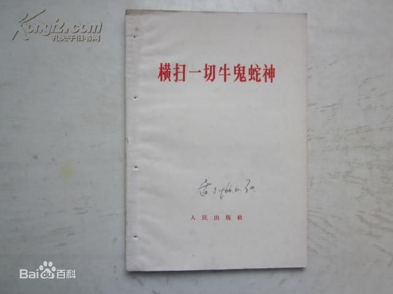
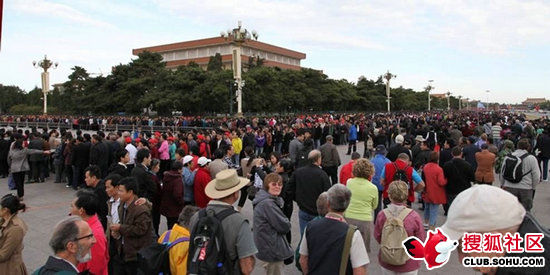
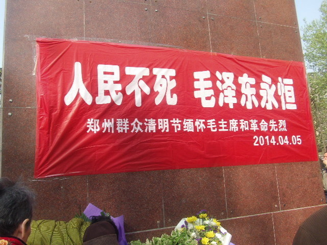

Conversation with 81184027 at Wed 09 Apr 2014 10:32:10 AM CST on 154115835 (webqq)
(10:33:23 AM) pastorqi: 4月9日，2014年的第99天。
天天主恩惠,福满溢灵程!
愿我们收获活水吗哪，对神发出感谢赞美
旧约 申 33：
诗 78:65-72
箴 12:25
新约 路13：1-21
(10:38:34 AM) 蔚蓝的天空: 
(10:42:08 AM) 光: 结合实际体会的一点感受 http://img3.douban.com/icon/u2407275-56.jpg 2009-04-11 13:56:15 来自: Sam (相爱，欢喜；寂然，独立。)
十封信--写给胆敢教书的人的评论 4 star rating4 star rating4 star rating4 star rating 4
一
“认识从头至尾与成长有关。但少数统治者的认识绝对不能阻碍、窒息，阉割被统治的大多数人的成长”，这是《十封信——写给胆敢教书的人》这本书的最后一句话。
这本书是站在左派的政治立场上阐发作者的教育观的。作者首先认为教育是一种政治活动，教师通过教育来改变社会，实现自己的政治理想。与此同时，教师作为政治个体，在公民生活中也应尽力发挥自己的政治作用。
所以教师首先应该是人格独立、对政治有批判性的关注的主体。
可是我身处教育界，却丝毫感觉不到我们的教师具有这样的素质。我们培养学生只有分数这一个目标；而我们关心的“政治”只是我们自身的经济利 益。教育管理机构把教学质量和奖金挂钩，而教学质量是指有效人头、上大学的人数和踩线生。其他学生的情况是不计入质量评估的。在高三的紧张氛围下，这不是 有意识地一边用压力束缚教师的思想，一边引导教师只注重部分学生的分数吗？很多教师为了完成上述任务而无暇他顾，根本不可能再考虑学生的终身发展，甚至会 放弃很多分数不能达标的学生。
我认识的同事里，我还看不出哪个人有自己的政治选择的，因为我们这里的政治不需要选择，也不需要参与。
去年我们这里的教师因为待遇的问题进行了有必要的斗争。结果受到了社会各界的大加指责，仿佛这是一件很出格的事似的。一时间纷纷地传罢工的组 织者都会受到“处分”，我不知道最后这些带领大家为争取自己应得权力的人最后怎么样了（因为我们的政治从来都不是透明的），但是那些因此而得到好处却在冷 眼旁观甚至看热闹的人，你们心理难道无愧吗？那些所谓的共和国的公职人员们，鼓吹我们的民主才是真正的民主的人，却认为教师作为教育国家未来之公民的人都 没有表达自己政治诉求的权利。
这就是我们教育的悲哀——我们自己都会被榨干思想和热情，所以我们心理其实根本不知道要把学生培养成什么样的人。检验我们的唯一标准就是分数，我们在各种压力的打压之下连自我都会丢失，还有什么资格谈培养“人”。
二
在教育的操作过程中，我印象很深的是作者谈到的“爱和纪律”。这两条之所以重要是因为它强调了教师作为管理者和一般的管理者的不同。
因为管理的目的不同，管理学生是为了学生本人能够进步和发展。而不是为了通过他们完成另一项工作——学生本身就是工作。所以爱是管理的前提。而另一个方面，为了他们的发展，才形成教育过程中的纪律。因此纪律的维持，也必须通过管理者而不仅是制度去协调。
在某种程度上学生是最容易放弃自己的一类人。因为他们作为未成年人的身份，使得他们在大多数时候可以选择消极和逃避的态度对待自己和周围的环 境。没有任何制度上的办法可以强迫他们——开除的威胁对能够构成这项处分的学生算不了什么或者只能给其带来伤害，使他更加难于改变。
教师作为管理者，要管理学生唯一的武器就是爱和自身的人格力量。显然，这种“武器”无法具备任何的暴力色彩和强制作用，能够强制学生的只有他们自己。帮助他们去战胜自我这才是完成工作的方法，因为学生本身的发展就是工作。
这对教师的要求非常高。但是那种完全不可理喻的学生仍然是极少数的，教师首先要克服害怕的心理。真实地认识学生，才可能与学生建立起沟通的纽带。而这正是施展自己影响力的基础。
三
这本书还谈到很多认知方面的理论。比如通过写作使我们跳出日常生活的麻木，而“发现”生活得真实等等。都是非常有趣的观点，也值得花些精力去理解。
(10:42:08 AM) 发送失败,错误号:1:
结合实际体会的一点感受 http://img3.douban.com/icon/u2407275-56.jpg 2009-04-11 13:56:15 来自: Sam (相爱，欢喜；寂然，独立。)
十封信--写给胆敢教书的人的评论 4 star rating4 star rating4 star rating4 star rating 4
一
“认识从头至尾与成长有关。但少数统治者的认识绝对不能�
(10:42:19 AM) 光: 结合实际体会的一点感受
一
“认识从头至尾与成长有关。但少数统治者的认识绝对不能阻碍、窒息，阉割被统治的大多数人的成长”，这是《十封信——写给胆敢教书的人》这本书的最后一句话。
这本书是站在左派的政治立场上阐发作者的教育观的。作者首先认为教育是一种政治活动，教师通过教育来改变社会，实现自己的政治理想。与此同时，教师作为政治个体，在公民生活中也应尽力发挥自己的政治作用。
所以教师首先应该是人格独立、对政治有批判性的关注的主体。
可是我身处教育界，却丝毫感觉不到我们的教师具有这样的素质。我们培养学生只有分数这一个目标；而我们关心的“政治”只是我们自身的经济利 益。教育管理机构把教学质量和奖金挂钩，而教学质量是指有效人头、上大学的人数和踩线生。其他学生的情况是不计入质量评估的。在高三的紧张氛围下，这不是 有意识地一边用压力束缚教师的思想，一边引导教师只注重部分学生的分数吗？很多教师为了完成上述任务而无暇他顾，根本不可能再考虑学生的终身发展，甚至会 放弃很多分数不能达标的学生。
我认识的同事里，我还看不出哪个人有自己的政治选择的，因为我们这里的政治不需要选择，也不需要参与。
去年我们这里的教师因为待遇的问题进行了有必要的斗争。结果受到了社会各界的大加指责，仿佛这是一件很出格的事似的。一时间纷纷地传罢工的组 织者都会受到“处分”，我不知道最后这些带领大家为争取自己应得权力的人最后怎么样了（因为我们的政治从来都不是透明的），但是那些因此而得到好处却在冷 眼旁观甚至看热闹的人，你们心理难道无愧吗？那些所谓的共和国的公职人员们，鼓吹我们的民主才是真正的民主的人，却认为教师作为教育国家未来之公民的人都 没有表达自己政治诉求的权利。
这就是我们教育的悲哀——我们自己都会被榨干思想和热情，所以我们心理其实根本不知道要把学生培养成什么样的人。检验我们的唯一标准就是分数，我们在各种压力的打压之下连自我都会丢失，还有什么资格谈培养“人”。
二
在教育的操作过程中，我印象很深的是作者谈到的“爱和纪律”。这两条之所以重要是因为它强调了教师作为管理者和一般的管理者的不同。
因为管理的目的不同，管理学生是为了学生本人能够进步和发展。而不是为了通过他们完成另一项工作——学生本身就是工作。所以爱是管理的前提。而另一个方面，为了他们的发展，才形成教育过程中的纪律。因此纪律的维持，也必须通过管理者而不仅是制度去协调。
在某种程度上学生是最容易放弃自己的一类人。因为他们作为未成年人的身份，使得他们在大多数时候可以选择消极和逃避的态度对待自己和周围的环 境。没有任何制度上的办法可以强迫他们——开除的威胁对能够构成这项处分的学生算不了什么或者只能给其带来伤害，使他更加难于改变。
教师作为管理者，要管理学生唯一的武器就是爱和自身的人格力量。显然，这种“武器”无法具备任何的暴力色彩和强制作用，能够强制学生的只有他们自己。帮助他们去战胜自我这才是完成工作的方法，因为学生本身的发展就是工作。
这对教师的要求非常高。但是那种完全不可理喻的学生仍然是极少数的，教师首先要克服害怕的心理。真实地认识学生，才可能与学生建立起沟通的纽带。而这正是施展自己影响力的基础。
三
这本书还谈到很多认知方面的理论。比如通过写作使我们跳出日常生活的麻木，而“发现”生活得真实等等。都是非常有趣的观点，也值得花些精力去理解。
(10:42:31 AM) 光: http://book.douban.com/review/1958094/
(10:43:42 AM) 光: 我认识的同事里，我还看不出哪个人有自己的政治选择的，因为我们这里的政治不需要选择，也不需要参与。
(10:44:11 AM) 光: 教师作为管理者，要管理学生唯一的武器就是爱和自身的人格力量。显然，这种“武器”无法具备任何的暴力色彩和强制作用，能够强制学生的只有他们自己。帮助他们去战胜自我这才是完成工作的方法，因为学生本身的发展就是工作。
(10:44:33 AM) 蔚蓝的天空: 革命的根本问题是政权问题。上层建筑的各个领域，意识形态、宗教、艺术、法律、政权，最中心的是政权。有了政权，就有了一切。没有政权，就丧失一切。
(10:44:58 AM) 光: 嗯
(10:45:16 AM) 光: 你的观点有点接近铁血论坛上的观点
(10:45:49 AM) 蔚蓝的天空: 那个论坛我看过
(10:46:01 AM) 光: 嗯
(10:46:17 AM) 蔚蓝的天空: 我主要看韩德强的网站
(10:46:26 AM) 蔚蓝的天空: 九项主张
(10:46:35 AM) 光: 孔庆东
(10:46:42 AM) 光: 这个人你熟悉么
(10:47:09 AM) 蔚蓝的天空: 韩德强是毛派的人物
(10:47:27 AM) 光: 嗯
(10:47:29 AM) 蔚蓝的天空: 创办的正道网
(10:47:33 AM) 光: 毛新宇
(10:47:46 AM) 蔚蓝的天空: 毛新宇那就不说
(10:48:09 AM) 光: 嗯
(10:48:23 AM) 蔚蓝的天空: 他是主席的孙子 不好说什么
(10:48:58 AM) 光: 嗯
(10:49:13 AM) 蔚蓝的天空: 不过同样是三胖 他和朝鲜那位相差太多
(10:49:26 AM) 光: 乌有之乡
(10:49:32 AM) 光: 想起来了
(10:49:42 AM) 光: 毛左主要集中在这里
(10:50:00 AM) 蔚蓝的天空: 乌有之乡好像给关掉了
(10:50:23 AM) 蔚蓝的天空: 代表人物还有司马南
(10:50:33 AM) 蔚蓝的天空: 孔祥东
(10:50:42 AM) 光: 乌有之乡是中国大陆一个带有政治毛主義和毛派色彩的中国雜誌社和政经评论网站，其和政治自由主義的炎黄春秋和凱迪社區立場及意見相左。[1]該站于2003年由北京乌有之乡文化传播有限公司开设。创办人包括范景刚、韩德强等人。网站在2012年4月12日被当局關閉。
(10:50:45 AM) 光: 哦
(10:50:52 AM) 光: 12年关的
(10:51:07 AM) 光: 我记得我以前还看过
(10:51:23 AM) 蔚蓝的天空: 但是韩德强的正道网没关
(10:52:05 AM) 光: 被迫下台及事件余波 主条目：薄熙来事件 另见：王立军事件和海伍德死亡案 2012年2月9日，中国外交部发言人办公室应询答问时表示，重庆市副市长王立军于2月6日进入美国驻成都总领事馆，滞留1天后离开。有关部门正在对此进行调查。[25] 2012年3月14日，时任中国国务院总理温家宝在“两会”记者招待会上公开要求重庆市委、市政府就王立军事件进行反思并吸取教训[26]。 2012年3月15日（即中国“两会”结束后的第二天），中共中央决定，薄熙来不再兼任重庆市市委书记、常委及委员职务，由国务院副总理张德江兼任重庆市委委员、常委、书记[27]。 2012年4月10日，中共中央决定，停止薄熙来担任的中央政治局委员、中央委员职务，由中共中央纪律检查委员会对薄熙来立案调查。官方媒体新华社的受权发布消息[3]，公安机关对“尼尔·伍德死亡案”进行了复查，薄熙来妻子谷开来（官方通报中称其“薄谷开来”）与海伍德有经济利益矛盾，有证据证明海伍德死于他杀，谷开来和薄家勤务人员张晓军有重大作案嫌疑，二人涉嫌故意杀人犯罪，已被移送司法机关处理。 2012年9月28日，中共中央政治局会议审议并通过中共中央纪律检查委员会《关于薄熙来严重违纪案的审查报告》，决定给予薄熙来开除党籍、开除公职处分，对其涉嫌犯罪问题及犯罪问题线索移送司法机关依法处理。 2012年10月26日，全国人大常委会公告[28]：重庆市人大常委会罢免了薄熙来的第十一届全国人大代表职务，依照《中华人民共和国全国人民代表大会和地方各级人民代表大会代表法》的有关规定，薄熙来的全国人大代表资格终止，可移交司法。 2012年11月7日，中共十七届七中全会确认中共中央政治局对薄熙来开除党籍。
(10:52:14 AM) 光: 和薄熙来下台有关
(10:52:18 AM) 蔚蓝的天空: 因为现在的权贵最害怕毛时代的方法重来
(10:52:36 AM) 光: 孔和尚还有司马南等
(10:52:34 AM) 蔚蓝的天空: 是的
(10:52:41 AM) 光: 都是薄熙来的支持者
(10:52:50 AM) 光: 青年的时候就是铁杆
(10:53:20 AM) 蔚蓝的天空: 薄曾骂胡是汉献帝
(10:54:06 AM) 光: http://bbs.tianya.cn/post-free-3141533-1.shtml
(10:54:09 AM) 光: 你看这个
(10:54:12 AM) 光: 就明白了
(10:54:49 AM) 光: 司马南最矮的那个
(10:55:02 AM) 光: 左边薄熙来 后边孔庆东
(10:55:06 AM) 光: 最
(10:55:12 AM) 光: 最右边
(10:55:15 AM) 发送失败,错误号:103:
最右边
(10:55:21 AM) 光: 最右边
(10:55:45 AM) 蔚蓝的天空: 看的出来
(10:56:21 AM) 光: 嗯
(10:56:46 AM) 光: 毛左的新阵地是哪里？
(10:57:00 AM) 光: 乌有之乡之后
(10:57:21 AM) 蔚蓝的天空: 正道网
(10:56:49 AM) 蔚蓝的天空: 这是利益集团的把他们摧垮了
(10:57:34 AM) 光: 嗯
(10:57:36 AM) 光: 我看看
(10:57:58 AM) 光: http://www.zhengdao.us/
(10:58:00 AM) 光: 这个？
(10:58:18 AM) 光: 如果是的话太悲摧了
(10:58:24 AM) 蔚蓝的天空: 也被屏蔽过 后来改为九项主张
(10:58:57 AM) 蔚蓝的天空: 韩德强说 薄公出事以后他一项很失望
(10:59:08 AM) 光: 用的是美国的域名
(10:59:13 AM) 光: 你说悲摧不
(11:00:05 AM) 蔚蓝的天空: 你用百度搜九项主张
(11:00:42 AM) 光: 嗯
(11:00:41 AM) 蔚蓝的天空: 权贵和利益集团 担心毛的思想复辟
(11:01:41 AM) 蔚蓝的天空: 薄公的重庆模式就是先兆
(11:01:50 AM) 光: 正道网将秉持中国立场，世界情怀。 中国立场，立足于解决中国问题。中国问题，“抗美救国，转型备战，整党正本，反腐除奸，人民监督，共同富裕”，必须且可行。但是，冤情未了，悲情迷漫，政治共识一时难以形成，二十四字方针恐成良好愿望。 从经济基础层面看，极端私有化、市场化导致了两极分化，全球化导致了经济主权落入跨国公司之手。由此，官商勾结，汉奸买办势力猖獗，中国政治主权亦岌 岌可危。以经济基础决定上层建筑论，无论个别政治人物如何优秀，无论政治思想如何变化，都不能解决问题。只有重新改变所有制，才能解决问题。 若强调上层建筑的主导作用，则事情还有可为余地。上层建筑由政治体制、政治人物、政治风气、政治思想所构成。其中，政治思想所起的作用最长远、最隐 蔽，暂时看也最微弱。今日中国之所以发生如此巨变，是因为中国领导层、知识界、舆论界进而普通人的政治思想早已深受西方政治思想影响，难以自拔。西方政治 思想立足于性恶论，容易解释大众的日常生活感受和经验。只要接受了性恶论，则经济上必然推崇私有制和市场机制，政治上必然接受三权分立、民主竞选、利益博 弈的游戏规则。利益集团博弈继续升级，则为阶级斗争。五四运动以来，在科学与民主的大旗下，右派接受了自由竞争、民主竞选，左派接受了阶级斗争，其实均属 西方性恶论思维。虽然左右政治斗争激烈，但两者深层思维却相通。故同一个政治人物，忽左忽右，极左极右，转变之快，虽往往出人意料，却也在西方思维的情理 之中。 明此深理，则可知，要真正改变中国社会，必先重新认识以性善论为基础的中国政治思想。明此深理，则可知，经济基础决定上层建筑论亦属西方思想。明此深理，则可知，没有以性善论为基础的中国政治思想，世界只能在利益博弈中走向自相残杀、自我毁灭。 不谋全局者不足以谋一隅，不谋万世者不足以谋一时。在技术手段已经将世界联成一体，各国的日常生活已经相互影响的时代，中国已经难以独善其身。中国政治思想不但是中国的需要，更是世界的出路。这才是真正的普世价值。这是正道网的世界情怀。 故此，正道网将致力于正本清源，重新认识世界，重新评价各种历史事件、人物、思潮、观点、趋势，将被颠倒、被混淆、被篡改、被隐蔽的事实、感觉和经验恢复过来，重新找回人的自豪、尊严与价值。具体看法暂列如下九点，欢迎同道者增补、删改： 一、 主张确立“为人民服务的中央集权政治体制”的合理性和合法性。理解并同情自由主义的政治理念，主张吸收其合理性部分，但反对其成为中国政治体制的主导理念。 二、 主张确立“为人民服务”为核心价值观。如何“为人民服务”可以有多种解释，即价值观一元多样。强烈批判当今社会以自由之名，行自由堕落 之实。强烈反对各大门户网站以色情图片提高点击量。强烈反对各种毒品，包括电子游戏毒品。强烈反对同性恋。当今社会则是以自私自利为价值核心，实现了利己 主义价值观的“一元多样”：即鼓励自私自利、自由地堕落、自由地弱肉强食，只是表现形式多样化。 三、 批判当今中国社会贪腐成风、官商勾结、两极分化、道德沦丧的现实。但是，中国社会发生着的一切罪恶和问题，并不是中国政治理念和体制造成的，而是中国受自由主义思想影响，特别是受性恶论思想影响，背离为人民服务宗旨所造成的。自由主义认为，问题的根源都在于中央集权的政治体制。正道网则认为，问题的根源都在于人心的败坏，都在于政治高层日益背离为人民服务的宗旨。 四、 当今世界，少数强权国家依仗自身的技术、经济、政治、军事优势，利用民众的肤浅和短视，对外输出自由主义的政治理念和制度，造成国际社会的无政府主义战乱，造成大多数国家政局动荡，经济衰退，民不聊生。因此，为人民服务的中央集权政治体制不但是中国特色，更应该是普世价值。新中国六十多年来的成就应该归功于此，其问题应该归罪于对该理念和体制的背离。中国模式，其核心是这种政治理念和体制。 五、中国现行政治体制仍然有许多方面需要改进。例如，应该强化领导核心的责任和地位，而不是借民主之名削弱之，使一个又一个领导机关变成清谈俱乐部。例如，纪律检查委员会应该垂直运行，不需要看同级党委的脸色。例如，赋予各级人大罢免、弹劾同级政府领导的权力。 六、为人民服务需要各层领导者以身作则。以身作则意味着“政教合一”。自由主义强烈批判“政教合一”，其立论基础是性恶论。因此，批判自由主义，必然意味着重新发现“政教合一”的内在合理性，从而发现性善论的光辉，发现古典政治的光辉。这里需要说明的是，“政教合一”指的是其广义含义：“政”即政体，“教”即指导思想或者信仰体系。在广义上, 所谓宪政民主制度，也是一种“政教合一”的政治制度：其“教”即自由主义信念，即对言论自由、结社自由、自由竞争、民主选举、分权制衡的信念。自 由主义者认为毛泽东时代是“政教合一”的制度，其“教”即马克思列宁主义、毛泽东思想。我们认为，这本身并没有大错。错，恰恰在于放弃了“教”，背离了 “教”。自由主义者还认为，今日中国也仍然是“政教合一”的国家：其“教”即马克思列宁主义、毛泽东思想、邓小平理论、三个代表、科学发展观。我们认为， 这本身也没有大错。错，恰恰在于这些思想内在相互矛盾，不能自圆其说。故，干部队伍思想混乱，自行其是，而逐渐趋于堕落，导致中国社会各种问题日趋严重。 七、 基于上述看法，正道网理解并同情各种政治活动或签名，认为这有助于人们关心社会、认识世界。但是，不认为这些活动或签名能改变世界。公民社会，无论是不是 社会主义取向的，都属于自由主义政治范畴，其结果，往往是社会日益碎片化、原子化，往往强化了资本对社会的控制。一百多年来，西方各国的自由主义左翼力量 只是在浅层次上于社会有益，深层次的问题一个都没有解决。报纸、互联网、微博都属于自由主义的载体，此类媒体越发达，社会思想越是一地鸡毛，人心越趋向于堕落。如果正道网被封杀，只能说明世道人心无可挽回。 八、 在为人民服务的中央集权政治体制下，从根本上解决问题需要靠各个层次的优秀领导人。优秀的领导者不是凭空产生的。一，要立大志。志向是 一个人成长的核动力，是文明其精神的要义。二，学会做自己身体和欲望的领导者，有坚强的意志和健康的身体，即野蛮其体魄。三，要能够经风雨、见世面，从小 事做起，从团结周围的朋友、乡亲、同事做起。如此，必将有大批优秀的领导者产生在各级各类岗位上，接班人问题自然就不存在了。目前看，新任总书记习近平有 望成为这样的优秀领导人。经过三十多年的改革开放，中国社会在经济、社会、政治领域积累起许多严重的问题。这些问题需要解决的时间和时机，我们要有耐心、 想办法、出主意，尽微薄之力帮助习近平总书记汇聚体制内外的健康力量，打击体制内外的贪腐力量。 九、中国政治思想认为，政者，正也。其身正，不令而行，其身不正，令而不行。故，正道，既是治国、平天下(和谐中国，和谐世界)的政道，也是修身、齐家(身心和谐，家庭幸福)的正道。有正气，才能行正道。有正道，才能有和谐。身 心和谐，则医院生意清冷。社会和谐，则公检法无事可做。美国医疗经费占其GDP的18%，还买不到健康。司法经费占其GDP的14%，还换不来实质公正。 这两项属“内战”性质的费用，合计高达GDP的32%，是其军费的5倍之多。这就是西方政治理念和体制的恶果。两相比较，我们有充分的理由对中国的优秀政 治思想寄予厚望。这就是正道。
(11:02:47 AM) 光: 这个？
(11:03:02 AM) 3235516480: 大家好 希望在这里能向大家学习
(11:02:51 AM) 蔚蓝的天空: 诞生于去年九月爱国保钓游行运动的韩德强正道网（曾用名“韩德强中文网”）今日发布公告，宣布正式改名为“正道网”，并提出了“九项主张(看法)”。公告中说： 韩德强正道网创办至今已十月有余。打汉奸事件得到网友们的热情支持，是网站创办之机缘。故初创之时，带有强烈的个人印记，定名韩德强正道网。 现在，韩德强老师认为，该名称已完成其历史使命，可以淡化个人特色，建议改名为正道网。
(11:03:31 AM) 光: ：）
(11:03:42 AM) 光: @3235516480 你好
(11:07:23 AM) 3235516480: :coffee::rose::-D
(11:07:44 AM) 光: :face14:
(11:08:17 AM) 光: 左派观点可以有
(11:08:57 AM) 蔚蓝的天空: 清明毛主席纪念堂瞻仰人数超十万排队3公里 震撼国人
(11:09:53 AM) 光: 即使在美国也有鹰派人物和鸽派人物
(11:10:00 AM) 光: 中国也可以这样
(11:12:53 AM) 广西-柳州&小何: 天下兮兮皆为利往
(11:16:20 AM) 蔚蓝的天空: 为什么现在的老百姓对毛的怀念越来越强烈
(11:17:15 AM) 福建-福州&水浒: 有集体就有纷争。美国的强大是因为，他们把错误的例子大白天下警示后人，让后人认知，中国的强大是把错误的决策封闭，不让后人知道前者的心思。而且现在还一直延续
(11:18:09 AM) 蔚蓝的天空: 一切反动派都是纸老虎
(11:17:36 AM) 3235516480: 毛和普京有部分共同点 不怕外强
(11:19:46 AM) 蔚蓝的天空: 毛主席是中华人民共和国的立国之父，是中国劳苦大众的救命大恩人。
(11:20:08 AM) 福建-福州&水浒: 共产党万岁:D
(11:20:33 AM) 福建-福州&水浒: 国民党也万岁
(11:20:47 AM) 反邪★石家庄: 老百姓万岁
(11:20:37 AM) 福建-福州&水浒: 万万岁
(11:21:09 AM) 福建-福州&水浒: :D
(11:21:06 AM) 福建-福州&水浒: 这要是在文革时期，我是直接拉去批斗
(11:21:06 AM) 反邪★石家庄: 没有老百姓，那个党也扯淡
(11:21:21 AM) 蔚蓝的天空: 谁有本事就把他的头像挂在天安门
(11:21:32 AM) 反邪★石家庄: 老百姓是所有党派的再生父母
(11:21:45 AM) 蔚蓝的天空: 所以毛主席喊出人民万岁
(11:22:40 AM) 福建-福州&水浒: 人民万岁万万岁
(11:23:13 AM) 福建-福州&水浒: 万岁一词不觉得想封建社会词汇么
(11:23:50 AM) 蔚蓝的天空: 这个 可以有
(11:24:08 AM) 福建-福州&水浒: 人民喊毛万岁，其实多数人思维还停留在封建社会
(11:25:10 AM) 埃及无雪: :L:L
(11:25:30 AM) 反邪★石家庄: 毛的时代有邪教吗
(11:26:05 AM) 福建-福州&水浒: 没有
(11:26:10 AM) 福建-福州&水浒: 全部打垮
(11:26:38 AM) 反邪★石家庄: 怀念
(11:26:41 AM) 蔚蓝的天空: 因为他可以横扫一切牛鬼蛇神
(11:26:57 AM) 福建-福州&水浒: 也因为封闭了，所以现在国人才容易被忽悠
(11:27:07 AM) 福建-福州&水浒: :D
(11:27:35 AM) 福建-福州&水浒: 凡事两面型
(11:27:39 AM) 蔚蓝的天空: 因为那个时代的人 不缺信仰
(11:27:04 AM) 蔚蓝的天空: 
(11:28:11 AM) 福建-福州&水浒: 两个矛盾之间都是一个共同的载体
(11:28:22 AM) 蔚蓝的天空: 现在是个道德沦丧信仰缺失的年代
(11:28:36 AM) 福建-福州&水浒: 嗯嗯
(11:28:44 AM) 福建-福州&水浒: 没有统一的道德底线
(11:28:55 AM) 福建-福州&水浒: 你就说小学生守则吧
(11:29:02 AM) 福建-福州&水浒: 孝顺父母
(11:29:18 AM) 福建-福州&水浒: 怎么做叫做孝顺父母呢
(11:29:35 AM) 福建-福州&水浒: 是不是父母的话都听叫孝顺呢
(11:30:05 AM) 蔚蓝的天空: 历史规律不可违，民心民意不可违!
(11:30:24 AM) 福建-福州&水浒: 有些神二代就因为孝顺父母才被父母带去邪教
(11:31:20 AM) 3235516480: :p
(11:31:47 AM) 福建-福州&水浒: 教育体系出问题了
(11:34:00 AM) 3235516480: 连同大方向的国家教育体系也很问题
(11:35:22 AM) 光: http://www.vice.cn/index.php/Read/the-malaysian-nazis-fighting-for-a-pure-race
(11:35:27 AM) 光: 昨天一个网友分享的
(11:45:15 AM) 光: 中国人的冷漠（翻译）
作者：林语堂 译者：songtao
如果说中国人的耐心是举世无双的话，那他们则更是出了名地冷漠。我认为这同样是社会环境的产物。这里有个再明显不过的例子作为对照。英国名著 《汤姆求学记》中有这样一个场景，汤姆·布朗临行前，母亲嘱咐他“要抬头挺胸，直截了当地回答别人的问题”，然而中国母亲对儿子的临别嘱咐却往往是“少管 闲事”。出现这种现象，是因为身处一个法律不保障个人权益的社会，不关心公共事务总是比较保险，对中国人来说这是冷漠吸引人的一面，西方人则难以认同。
但我觉得这种差异并非与生俱来，而是与中华文化相适应的产物，是在特定的社会环境下产生并遗留下来的，而后人则接受着这种旧观念的熏陶。 Taine（美国自然主义文学的代表作家之一，译者注）曾说过恶行和美德好比硫酸和砂糖。若非持有这种绝对的观点，我们仍会认同多数人的看法，即认为任何 美德都是“好的”，值得受到整个社会的广泛推崇，并极有可能将它作为生活中的一般准则。
中国人固守的冷漠态度就像是英国人随身携带的雨伞一样，因为风云多变的政治气候总是暗藏危机，这对于那些管得太多的人来说终归是一种潜在的威 胁，换言之，中国青年和外国青年一样都热心公益，中国和其他国家一样，也有热血志士，他们也热衷于“参与公共事务”。但等这些年轻人到了25~30岁之间 的某个时候，大家全都变聪明了（中国人叫做“学乖了”），变冷漠了，而冷漠是判断一个人是否老练和有教养的重要标准。有的人自然而然就学会了冷漠，有的人 则是在手指被灼伤一两次后才习的的。所有的老人都行事谨慎，因为所有曾经行为不羁的老家伙都已经受益于冷漠，他们要在这个个人权益不受保障的社会里生存下 去，在这样的社会里，把手指头烫伤一次已经是足够倒霉了。
因此，在个人权益得不到保障的情况下，冷漠也就获得了自己的“生存价值”。一个人太热衷于公共事务（或者中国人所谓的“闲事”）是非常危险 的。邵飘萍和林白水这两位中国最勇敢的记者在1926年被东北军阀（张作霖，译者注）枪毙，甚至都没经过任何审判，其他记者自然会从中学会冷漠，开始“变 聪明。”在中国，所谓的最成功的记者，是那些对生活，特别是对当下最迫切的社会问题没有任何自己看法的记者。他们又能做些什么呢？人们只有在个人权益得到 保护的情况下才会热心公益，这时，大家只需注意诽谤法（国外把保护名誉的法律通称为“诽谤法”，译者注）。但当公民权益都得不到保护时，人们自我保护的本 能便会告诉自己，莫谈国事才是对自己人身自由的最好保护。
换言之，冷漠并非一种高尚的美德，而只是一种社会态度，人们因为得不到法律保护而把它当作必需。冷漠是一种自我保护的表现，如同乌龟进化出龟 壳。中国人的漠视眼神举世闻名，但这只是出于自我保护的需要，在很大程度上这要归咎于中国的文化和中国人的自我约束。中国的强盗和土匪就是这一论断的事实 依据，强盗和土匪无需仰仗法律的庇护，因而没有进化出冷漠的外壳，他们是中国社会中最具侠义心肠和公益精神的一个群体。这种有中国特色的骑士精神，以“豪 侠”为名义，与白话小说《水浒》有着必然的联系。读者通过阅读小说，感受着这些好汉的生活与冒险，通过小说间接得到快感。这就像Elinor Glyn（英国小说家，性爱小说的先锋，译者注）受到追捧是因为她背后有大量美国老处女作为她的拥趸一样。因此，强者是这些富有公益精神的人，因为他们敢 承担管闲事的后果，而弱者自然是剩下的大多数，他们出于自我保护的需要，不搀和时事。
回顾中国历史，我们也能惊奇地找到佐证。中国的魏晋时期，文人因不关心国家事务而受推崇，结果使国力渐衰，导致中国北部被北方蛮族征服。魏晋 时期的文人热衷于饮酒和聚众“清谈”，沉迷于道教的神话，梦想找到吃了能长生不老的仙丹。这一时期是自周朝和汉朝以来，中华民族在政治上的最低点，也代表 了一个时代衰退的终结，此后中华民族在历史上第一次被蛮族统治。中国人这种对国事不闻不问的冷漠态度算正常吗？如果不正常，那是什么原因造成了现在这种局 面？历史给了我们答案。
直到东汉末年，中国的文人才开始摒弃这种冷漠的态度。事实上，在这个阶段的政治批评达到了高潮。一些主要的文人和“太学生”都积极参与有关时 政问题的讨论（一般叫聚众清议，译者注），参与讨论的人有三万多，他们对朝廷政策和任人唯亲的选材手段进行大胆批评，这是要冒着惹恼宦官和皇帝的风险的。 然而，由于没有相关法律的保护，这场清议运动在宦官的强势镇压下结束了。有些文人连同他们的整个家族被杀害，有的被流放或锒铛入狱。这一事件发生在公元 166-199年，被叫作“党锢”。党锢之祸的影响程度之深，范围之大，以至于整个清议运动从此以后戛然而止, 之后党锢之祸的消极影响一直持续了一百多年。党锢之祸随之而来的是文人们对国家事务的漠不关心，这些人开始沉迷于美酒、女色、诗词和道教。有些文人隐居山 林，自己动手修建没有门的泥砖房，从窗口拿别人送来的食物，就这样一直到最后老死。还有些文人化装成樵夫，并恳求亲戚们不要登门拜访，以免自己被人认出 来。
随后又出现了七个诗人，或曰“竹林七贤”。其中一个伟大的诗人叫刘伶，他嗜酒如命，常常好几个月都是一副醉醺醺的状态。刘伶乘鹿车时，手里常 抱着一壶酒，拿着一把锹，随身跟着一个掘墓人，上路之前就对他说：“我什么时候要是死了就随便找个地方把我埋了”。但大家都尊敬他，都说他“聪明”。其他 文人有的隐居田园，有的声色犬马，有的放浪形骸。另一个叫阮咸的大诗人与家里的女仆关系暧昧。有一回他在外听人说自己的妻子把女仆打发走了，他立马就从朋 友那儿借了匹马，快马加鞭赶上了女仆，当众将她抱上马背。这些人因他们的聪明而受人尊敬。人们对这些人的景仰，犹如小龟羡慕老龟的厚龟壳一样。
我们似乎已经找到了中国人态度冷漠的病灶，同时也了解了产生这种冷漠的根源，众所周知，这种冷漠使中国人不能有效地组织起来。而解决问题的办法似乎也很简单，即制定法律，保护民权。但好像没有人有足够的远见能看到这么做的长远影响。没人要求这样。也没人真的想这样。
(11:45:26 AM) 光: http://book.douban.com/review/2725832/
(11:46:11 AM) 光: 英国名著 《汤姆求学记》中有这样一个场景，汤姆·布朗临行前，母亲嘱咐他“要抬头挺胸，直截了当地回答别人的问题”，然而中国母亲对儿子的临别嘱咐却往往是“少管 闲事”。出现这种现象，是因为身处一个法律不保障个人权益的社会，不关心公共事务总是比较保险，对中国人来说这是冷漠吸引人的一面，西方人则难以认同。
(11:46:59 AM) 光: 中国人固守的冷漠态度就像是英国人随身携带的雨伞一样，因为风云多变的政治气候总是暗藏危机，这对于那些管得太多的人来说终归是一种潜在的威 胁，换言之，中国青年和外国青年一样都热心公益，中国和其他国家一样，也有热血志士，他们也热衷于“参与公共事务”。但等这些年轻人到了25~30岁之间 的某个时候，大家全都变聪明了（中国人叫做“学乖了”），变冷漠了，而冷漠是判断一个人是否老练和有教养的重要标准。有的人自然而然就学会了冷漠，有的人 则是在手指被灼伤一两次后才习的的。
(11:47:25 AM) 光: 因此，在个人权益得不到保障的情况下，冷漠也就获得了自己的“生存价值”。一个人太热衷于公共事务（或者中国人所谓的“闲事”）是非常危险 的。邵飘萍和林白水这两位中国最勇敢的记者在1926年被东北军阀（张作霖，译者注）枪毙，甚至都没经过任何审判，其他记者自然会从中学会冷漠，开始“变 聪明。”在中国，所谓的最成功的记者，是那些对生活，特别是对当下最迫切的社会问题没有任何自己看法的记者。他们又能做些什么呢？人们只有在个人权益得到 保护的情况下才会热心公益，这时，大家只需注意诽谤法（国外把保护名誉的法律通称为“诽谤法”，译者注）。但当公民权益都得不到保护时，人们自我保护的本 能便会告诉自己，莫谈国事才是对自己人身自由的最好保护。
(11:48:10 AM) 光: 冷漠是一种自我保护的表现，如同乌龟进化出龟 壳。中国人的漠视眼神举世闻名，但这只是出于自我保护的需要，在很大程度上这要归咎于中国的文化和中国人的自我约束。中国的强盗和土匪就是这一论断的事实 依据，强盗和土匪无需仰仗法律的庇护，因而没有进化出冷漠的外壳，他们是中国社会中最具侠义心肠和公益精神的一个群体。这种有中国特色的骑士精神，以“豪 侠”为名义，与白话小说《水浒》有着必然的联系。读者通过阅读小说，感受着这些好汉的生活与冒险，通过小说间接得到快感。这就像Elinor Glyn（英国小说家，性爱小说的先锋，译者注）受到追捧是因为她背后有大量美国老处女作为她的拥趸一样。因此，强者是这些富有公益精神的人，因为他们敢 承担管闲事的后果，而弱者自然是剩下的大多数，他们出于自我保护的需要，不搀和时事。
(11:49:02 AM) 光: 东汉末年，中国的文人才开始摒弃这种冷漠的态度。事实上，在这个阶段的政治批评达到了高潮。一些主要的文人和“太学生”都积极参与有关时 政问题的讨论（一般叫聚众清议，译者注），参与讨论的人有三万多，他们对朝廷政策和任人唯亲的选材手段进行大胆批评，这是要冒着惹恼宦官和皇帝的风险的。 然而，由于没有相关法律的保护，这场清议运动在宦官的强势镇压下结束了。有些文人连同他们的整个家族被杀害，有的被流放或锒铛入狱。这一事件发生在公元 166-199年，被叫作“党锢”。党锢之祸的影响程度之深，范围之大，以至于整个清议运动从此以后戛然而止, 之后党锢之祸的消极影响一直持续了一百多年。党锢之祸随之而来的是文人们对国家事务的漠不关心，这些人开始沉迷于美酒、女色、诗词和道教。有些文人隐居山 林，自己动手修建没有门的泥砖房，从窗口拿别人送来的食物，就这样一直到最后老死。还有些文人化装成樵夫，并恳求亲戚们不要登门拜访，以免自己被人认出 来。
(11:50:12 AM) 光: 我们似乎已经找到了中国人态度冷漠的病灶，同时也了解了产生这种冷漠的根源，众所周知，这种冷漠使中国人不能有效地组织起来
(11:51:16 AM) 光: 在中国，所谓的最成功的记者，是那些对生活，特别是对当下最迫切的社会问题没有任何自己看法的记者。他们又能做些什么呢？
(11:54:30 AM) 光: 批判性思维者知道，“独立思考”不在于受到什么影响，而在于是否意识到了影响和局限：不在于和哪一种观点不同或者相同，而在于怎么和它们相同或不同。独立于已有知识体系和思想的纯粹“独立思考”是不存在的。我们早就知道人不在真空中生活，没有人可以抓着自己的头发使自己脱离地球。人不是受这种思潮的影响就是受那种观念的推动。真正的独立思考是开放心灵，公正考察所有已知的事实和不同观点。在这样的思考下，即使你最后完全赞成某一方的立场，不管是什么样昀立场，这也是你独立思考的结果。独立思考指的是观念的分析和综合过程的具体性、全面性、开放性和公正性。这是批判性思维的关键要求。 简言之，诚实、认真地考虑各种不同观点，并在此基础上形成结论，这是独立思考。诚实和认真是很重要的。考虑不同立场不是做做样子，不是像婚姻中的吵架，一方能做到的最大的忍耐，就是等着另一方话音刚落，就再把自己的说词原封不动重复一遍，其中即使提到对方的观点理由，也是有意无意地简化、夸张和歪曲。情绪激动的双方并没有真正相互聆听和寻找共同点。思考的独立性是通过认真考察对立面建立起来的。这意味着，独立思考应该包括自我反思，把别人的观点作为镜子，以便发现和突破自己的成见。@《批判性思维原理和方法》
(11:55:38 AM) 光: 简言之，诚实、认真地考虑各种不同观点，并在此基础上形成结论，这是独立思考。诚实和认真是很重要的。考虑不同立场不是做做样子，不是像婚姻中的吵架，一方能做到的最大的忍耐，就是等着另一方话音刚落，就再把自己的说词原封不动重复一遍，其中即使提到对方的观点理由，也是有意无意地简化、夸张和歪曲。情绪激动的双方并没有真正相互聆听和寻找共同点。
(11:55:59 AM) 光: 独立思考应该包括自我反思，把别人的观点作为镜子，以便发现和突破自己的成见。
(11:56:55 AM) 福建-福州&水浒: 少数人
(11:57:02 AM) 光: 嗯
(11:57:40 AM) 福建-福州&水浒: 你就说以前一个记者随机问，路人你，幸福吗？
(11:57:52 AM) 光: 嗯
(11:57:50 AM) 福建-福州&水浒: 人家回答我姓曾
(11:58:00 AM) 福建-福州&水浒: 天大的笑话
(11:58:04 AM) 福建-福州&水浒: :D
(11:58:10 AM) 光: 嗯
(11:58:14 AM) 光: 冷幽默
(11:58:15 AM) 光: ：）
(11:58:28 AM) 福建-福州&水浒: 问题都问不对，难怪别人这么答了
(11:58:43 AM) 光: 嗯
(11:59:29 AM) 福建-福州&水浒: 现在许多学者想说话，不过基本都被人家给颗糖封口了
(11:59:57 AM) 光: 学者
(11:59:57 AM) 福建-福州&水浒: 从尖端话语变成权利傀儡
(12:00:03 PM) 光: 国内有学者么
(12:00:23 PM) 蔚蓝的天空: 当金钱出来说话的时候 真理沉默了
(12:00:31 PM) 福建-福州&水浒: 有啊，不能言
(12:00:41 PM) 光: 嗯
(12:01:50 PM) 蔚蓝的天空: 拜金主义已经没法改变了
(12:02:07 PM) 福建-福州&水浒: 就算说出来了，别人也看不到
(12:02:13 PM) 福建-福州&水浒: 听不着
(12:02:16 PM) 光: 嗯
(12:02:21 PM) 广西-柳州&小何: 拜金主义？
(12:02:31 PM) 福建-福州&水浒: 随时封口
(12:02:38 PM) 蔚蓝的天空: 金钱至上
(12:03:52 PM) 光: 日见增多的现象是，在网络上或者在传统媒体上，某个消息、文章、访谈，或者博客，经常会引起一边倒的情绪化的浪潮。在浪潮中浮沉、推波助澜的，有一般网民和读者，也有不缺乏各种头衔的学者、专家、教授。其实，只要运用批判性思维的最基本的原则，那些消息的真实性和准确性都是很容易被怀疑的。然而，现实是，从学者到一般网民，大量的人没能避免盲从。 批判性思维的一个重要作用，就是引导人们冲破盲从，或者说避免被“忽悠”。 批判性思维的方法引导人们去考虑产生盲从的三大来源：理由的虚假性、推理的不充足性和论证的单一性。在运用批判性思维时，人们会去分辨信息的真实性、推理的充足性和论证的全面性，避免被诱惑去做出轻信的和不明智的决定。这就避免了盲从。理性的批判就是破除迷信、偏见、成规、误导、封闭、单一和绝对的观点。 批判性思维要求人们不要根据直观的感觉来接受信念和结论。批判性思维催促你首先去辨别理由和证据、判断理由的真假好坏、探索隐含的假设和价值标准、挖掘更深的含义和根源，并寻求看问题不同的思路和视角。批判性思维帮助人们去伪存真。仅仅根据考察信息的质量的标准，你会将大部分来自小报和“八卦”杂志的新闻过滤。批判性思维帮助人们去粗取精，帮你找到那百分之二、三值得一读的佳作，帮你在盖着“大师”印章的学说面前保持冷静的、怀疑的态度。批判性思维为你提供怀疑的依据，它提醒你不要轻信声名远扬的学者的“亲身事实”。使用批判性思维，你可能发现，现在极为流行的那些思潮、史论、学说和秘诀，或许都没有通过这第一道安检门。@《批判性思维原理和方法》
(12:04:28 PM) 光: 批判性思维的一个重要作用，就是引导人们冲破盲从，或者说避免被“忽悠”。
(12:04:46 PM) 光: 批判性思维的方法引导人们去考虑产生盲从的三大来源：理由的虚假性、推理的不充足性和论证的单一性。在运用批判性思维时，人们会去分辨信息的真实性、推理的充足性和论证的全面性，避免被诱惑去做出轻信的和不明智的决定。这就避免了盲从。理性的批判就是破除迷信、偏见、成规、误导、封闭、单一和绝对的观点。
(12:05:00 PM) 光: 盲从的三大来源：理由的虚假性、推理的不充足性和论证的单一性。
(12:05:36 PM) 广西-柳州&小何: 这是唯心主义的明显特点
(12:05:46 PM) 光: 也有不缺乏各种头衔的学者、专家、教授。这类人我不认为是学者
(12:06:10 PM) 光: 只是有一个学者头衔的南郭
(12:06:20 PM) 蔚蓝的天空: 虽有甲兵，无所陈之。虽有舟舆，无所乘之。
(12:06:56 PM) 光: 。批判性思维帮助人们去粗取精，帮你找到那百分之二、三值得一读的佳作，帮你在盖着“大师”印章的学说面前保持冷静的、怀疑的态度。
(12:09:00 PM) 光: 理性的批判就是破除迷信、偏见、成规、误导、封闭、单一和绝对的观点。
(12:21:44 PM) 蔚蓝的天空: 蒙古军的屠城，杀掉北方百分之80的汉人，精英殆尽。明朝只算诈了下尸,可惜当年汉人的精气神全没了
(12:22:15 PM) 光: 嗯
(12:22:30 PM) 光: 那么有本书你可以看看
(12:22:44 PM) 蔚蓝的天空: 那本书
(12:23:07 PM) 光: http://book.douban.com/subject/3525645/
(12:23:10 PM) 光: 这本
(12:24:26 PM) 蔚蓝的天空: 崖山之後無中國，明亡之後無華夏，49年後無中華！
(12:24:42 PM) 光: 嗯
(12:24:47 PM) 光: 有这种说法
(12:25:24 PM) 光: 这个在于怎么定义中华这个概念了
(12:25:22 PM) 3235516480: 元朝历史
(12:25:40 PM) 光: 中华是仅限于汉族
(12:25:48 PM) 光: 还是包括更多
(12:25:56 PM) 蔚蓝的天空: 元朝不能算是中华历史
(12:26:11 PM) 蔚蓝的天空: 成吉思汗也不是中国人
(12:26:24 PM) 光: 嗯
(12:26:31 PM) 光: 按照这种说法
(12:26:36 PM) 光: 蒙古族就可以独立了
(12:26:44 PM) 光: 新疆也可以的
(12:27:07 PM) 光: 当然还有很多小的民族
(12:27:17 PM) 蔚蓝的天空: 成吉思汗是外蒙人
(12:27:30 PM) 光: 不都一样么
(12:27:28 PM) 蔚蓝的天空: 外蒙就是独立的
(12:27:40 PM) 广西-柳州&小何: 我们壮族也要独立了，哈哈
(12:27:41 PM) 3235516480: 有蒙古国 新疆没自己的国家
(12:27:46 PM) 光: ：）
(12:27:56 PM) 蔚蓝的天空: 天朝不会让他们独立的
(12:28:21 PM) 光: 新疆可以成立东突厥斯坦
(12:28:26 PM) 蔚蓝的天空: 我当兵在新疆
(12:28:32 PM) 光: 嗯
(12:28:38 PM) 蔚蓝的天空: 新疆的情况多少了解点
(12:29:16 PM) 光: 东突厥斯坦共和国流亡政府是于2004年9月14日在美国华盛顿成立的一个自称对包括中国新疆维吾尔自治区在内的地区享有主权的政府，是以原东突厥斯坦共和国总统秘书长侯赛因·卡里·土耳其斯坦尼（Hüseyin Qari Türkistani）为总统，美国东突厥斯坦民族自由中心主席安瓦尔·玉素甫·图拉尼（Anwar Yusuf Turani）为总理。 目前未受到任何国家承认。
(12:29:17 PM) 蔚蓝的天空: 他们是想建立东突厥斯坦共和国
(12:29:35 PM) 光: 居然已经在美国成立了流亡政府了
(12:29:41 PM) 蔚蓝的天空: 没有用的
(12:29:52 PM) 3235516480: 在美国的一条街上 开了个店面
(12:30:01 PM) 光: 东突厥斯坦或东土耳其斯坦[1]（维吾尔语：شەرقىي تۈركىستان, Sherqiy Türkistan），或称维吾尔斯坦（Uyghuristan），是历史上对以巴尔喀什湖—帕米尔高原一线以东的中亚地区的称谓。当代，是支持东突厥斯坦独立运动人士对今日中华人民共和国的新疆维吾尔自治区的称呼，或者指历史上的两次东突厥斯坦共和国。历史上，这个地区曾长时间存在若干独立国家，也曾数度在中国的控制之下。1759年，清朝平定准噶尔及大小和卓之乱，最终将天山北路的准部和天山南路的回部纳入版图，称为“西域新疆”，新疆之名即来源于此。因由中国所控制，故又被称为中国突厥斯坦或中国土耳其斯坦（Chinese Turkestan）。中华民国建立后，中国各地陷入长年战乱之中，中央政府对新疆的控制能力下降，新疆或东突厥斯坦独立运动得以发展。大致范围是历史上的察合台汗国疆域，常被称为蒙兀儿斯坦，西部（即Western Moghulistan）为叶尔羌、东部（即Eastern Moghulistan）又被称为畏兀儿斯坦（Uyghurstan，吐鲁番汗国）。
(12:30:35 PM) 蔚蓝的天空: 08年乌龙木齐暴乱 我的战友曾参与
(12:30:52 PM) 光: 嗯
(12:30:56 PM) 光: 名称由来 广义的突厥人是范指使用突厥语族的人民。在今天被称为突厥人的群体在中国史书上译作“铁勒”[来源请求]，突厥在中国史书上专指于公元6世纪建立第一个突厥人国家的、兴起于阿尔泰山的那个部落。尽管二者在中国史书上的名字有异，但在当时留下的突厥文碑铭中，中文所提到铁勒和突厥的地方突厥文都写作“Turk”。历史上的突厥人曾包括许多的部落，比如阿跌、浑、薛延陀、回纥、黠戛斯、葛逻禄、钦察、乌古斯等等[来源请求]。这些部落在一千多年的时间里分化、组合，在今天形成了分属不同国家的多个民族。以突厥人为民族主体的国家有土耳其、阿塞拜疆、乌兹别克斯坦、哈萨克斯坦、土库曼斯坦、吉尔吉斯斯坦，以及俄罗斯联邦内的一些自治共和国，如鞑靼斯坦、哈卡斯、巴什基尔、萨哈等等。中国的突厥民族有维吾尔、哈萨克、乌孜别克、柯尔克孜、塔塔尔、裕固、撒拉等民族以及被划入蒙古族的图瓦人等。 “突厥斯坦”一词为波斯语，意为“突厥人的国家”[来源请求]。该词最早出现在8世纪阿拉伯人撰写的地理学著作中，指包括河中地在内广大的中亚地区。“突厥斯坦”这一地理称谓一直被当地民族及与当地有政治经济联系的周边民族所使用，在从8世纪开始的不同时期的阿拉伯语、波斯语、突厥语、印地语（包括乌尔都语）的各种历史文献、碑铭、外交文书、经济文书及文学作品中被广泛使用。至18世纪，随着东部“突厥斯坦”被满族建立的清帝国所吞并，东西两部分原本通畅的联系开始变化。于是“东突厥斯坦”一词开始被使用。同时，保持政治独立的西部即被称为“西土耳其斯坦”或狭义上的“突厥斯坦”。19世纪中期，西部的希瓦、布哈拉、浩罕三个国家沦为俄罗斯帝国的殖民地，于是“西突厥斯坦”又被称为“俄国突厥斯坦”，“东突厥斯坦”又被称为“中国突厥斯坦”。[
(12:31:27 PM) 广西-柳州&小何: 我们继续叫“南蛮帝国”
(12:31:30 PM) 广西-柳州&小何: :D
(12:31:41 PM) 光: :face14:
(12:31:42 PM) 蔚蓝的天空: 最后局面无法控制 装甲车加上机枪 让暴徒个个下跪
(12:32:41 PM) 光: 名称由来 广义的突厥人是范指使用突厥语族的人民。在今天被称为突厥人的群体在中国史书上译作“铁勒”，突厥在中国史书上专指于公元6世纪建立第一个突厥人国家的、兴起于阿尔泰山的那个部落。尽管二者在中国史书上的名字有异，但在当时留下的突厥文碑铭中，中文所提到铁勒和突厥的地方突厥文都写作“Turk”。历史上的突厥人曾包括许多的部落，比如阿跌、浑、薛延陀、回纥、黠戛斯、葛逻禄、钦察、乌古斯等等。这些部落在一千多年的时间里分化、组合，在今天形成了分属不同国家的多个民族。以突厥人为民族主体的国家有土耳其、阿塞拜疆、乌兹别克斯坦、哈萨克斯坦、土库曼斯坦、吉尔吉斯斯坦，以及俄罗斯联邦内的一些自治共和国，如鞑靼斯坦、哈卡斯、巴什基尔、萨哈等等。中国的突厥民族有维吾尔、哈萨克、乌孜别克、柯尔克孜、塔塔尔、裕固、撒拉等民族以及被划入蒙古族的图瓦人等。 “突厥斯坦”一词为波斯语，意为“突厥人的国家”。该词最早出现在8世纪阿拉伯人撰写的地理学著作中，指包括河中地在内广大的中亚地区。“突厥斯坦”这一地理称谓一直被当地民族及与当地有政治经济联系的周边民族所使用，在从8世纪开始的不同时期的阿拉伯语、波斯语、突厥语、印地语（包括乌尔都语）的各种历史文献、碑铭、外交文书、经济文书及文学作品中被广泛使用。至18世纪，随着东部“突厥斯坦”被满族建立的清帝国所吞并，东西两部分原本通畅的联系开始变化。于是“东突厥斯坦”一词开始被使用。同时，保持政治独立的西部即被称为“西土耳其斯坦”或狭义上的“突厥斯坦”。19世纪中期，西部的希瓦、布哈拉、浩罕三个国家沦为俄罗斯帝国的殖民地，于是“西突厥斯坦”又被称为“俄国突厥斯坦”，“东突厥斯坦”又被称为“中国突厥斯坦”。 地理区域与自然环境 人口与民族构成 历史 史前及上古时期 这地区历史上被中国称为西域（狭义）。其从地理上可分为天山南北两部分，北部以牧业为主，南部塔里木盆地以绿洲农业为主。当中国汉帝国于公元前139年派遣张骞出使西域，最终沟通与中国本土的联系之时，塔里木盆地以属印欧语系的吐火罗人为主的人们已经建立了一些国家，主要为城邦，如伽师、莎车、于阗、龟兹、楼兰、鄯善等。北部也有许多国家和部落，一个较大的国家是乌孙。它们都受到匈奴的统治。汉帝国逐渐驱逐匈奴势力，结盟乌孙，在这个地区建立了短时段的一些军事基地。 中古时期 6世纪中叶，阿史那突厥由阿尔泰山附近迅速崛起，短时间内统一了大部分的突厥部落，建立了东跨兴安岭，西达里海，北抵北海，南邻中国的大突厥汗国。但这个国家很快分裂为东西两部分，大致以阿尔泰山为界，统治着突厥斯坦的西突厥汗国的统治中心在伊犁河流域，控制着塔里木盆地和河中诸小国。西突厥汗国后来被唐帝国消灭，东突厥汗国与则被回鹘汗国所取代。 这期间唐帝国一度控制了整个突厥斯坦，但当地的突厥部落与吐蕃对其进行了长久的骚扰和进攻。与吐蕃相比，最终在蒙古高原取代突厥汗国的回鹘汗国对唐帝国较为友好。回鹘是一个突厥部落，于743年击败阿史那突厥获得了统治全部的突厥部落的权力。当唐帝国和吐蕃先后于9世纪衰落后，回鹘汗国也于公元840年被另一突厥部落黠戛斯攻灭，大部西迁。那之后，在突厥斯坦主要有四个政权。最东部的是西迁的回鹘部落以今天的吐鲁番为中心建立的新的回鹘汗国（西州回鹘），信仰佛教和摩尼教；位于它西南方向的是塞人建立的于阗王国，信仰佛教；最西部的是操伊兰语的东伊朗人建立的萨曼王朝，信仰伊斯兰教；处在中间的是以巴拉萨衮和喀什噶尔为中心的部落不详的突厥人建立的喀喇汗王朝，这个国家也信仰伊斯兰教。萨曼王朝和于阗王国后来均被喀喇汗王朝吞并。在此后几百年里，各部落的突厥人以伊斯兰教为纽带逐渐团结、同化了突厥斯坦的大部分土著居民——粟特人、吐火罗人、塞人。在突厥斯坦的最东端，回鹘人同化了大量的中国人和吐蕃人，使得今天东部的维吾尔人的体貌特征与这两个民族相接近。 1124年，被女真人攻灭了的辽国的遗民，西迁到突厥斯坦，建立了喀喇契丹（西辽），通过已衰落了的喀喇汗王朝对绿洲居民进行间接统治。1218年，蒙古人消灭了契丹人的西辽。成吉思汗将东突厥斯坦分配给次子察合台，即察合台汗国。西突厥斯坦被封给了三子窝阔台，但后来窝阔台汗国被并入察合台汗国。当帖木尔的帝国从西突厥斯坦兴起后，东突厥斯坦的察合台后裔成为他的附庸。 近古时期 在这一时期，突厥斯坦最终完成了伊斯兰化和突厥化，包括察合台蒙古人在内，绿洲居民全部改操突厥语、信仰伊斯兰教、自称Musulman。 东察合台汗国时期。 叶尔羌汗国中晚期，从蒙古高原西迁到伊犁河流域，信仰藏传佛教的卫拉特蒙古（瓦剌）控制了突厥斯坦。卫拉特人中最大的部落准噶尔部建立了强大的汗国，并利用内乱最终灭亡了叶尔羌汗国。之后准噶尔汗国通过伊斯兰教宗教贵族圣裔和卓家族来控制东突厥斯坦的绿洲地区。但不久就被满族人建立了清帝国征服，准噶尔部被屠戮殆尽，满族人最终于1759年征服了整个东突厥斯坦。 近代前期 1759年东突厥斯坦被满族人征服。 19世纪60年代，由东突厥斯坦人民起义导致的抗清战争把境内的清军全部肃清，但胜利果实后来落入西突厥斯坦来的阿古柏之手。在他被人毒死后，清帝国再次占领了这个地区，并于 1881年这地区称为新疆并被中国沿用至今。 近代后期 1881年新疆省成立。 现代 1912年，清帝国崩溃。 1933年，新疆地区因为国民政府介入哈密回王的继承斗争引发动乱，南疆塔里木盆地的维族趁著国民政府完全无法影响新疆政局的时候，宣布成立“东土耳其斯坦伊斯兰共和国”。 这是维吾尔族成立的第一个独立于中国之外的政府。维吾尔人坚决抵制了沙俄和英帝国主义的殖民活动。民国时期，军阀盛世才入驻新疆，矛盾激化，没有多久，这个维族在近代成立的第一个独立国家就被苏联支持的军阀盛世才消灭，许多维族的菁英也惨遭杀戮。苏联支持盛世才的目的就是要打击英国和日本在中亚的势力，巩固新疆成为苏联的势力范围。 1944年，在苏联支持下，成立了“东突厥斯坦第二共和国”，并于1944年在伊犁、塔城、阿山（今阿勒泰）三个地区爆发武装暴动（中国大陆称之为三区革命），由阿合买提江·哈斯木担任领导人。 这是维族在短短10年间第2次独立建国。然而这次苏联的目的并非真正支持维族独立，而是利用他们创造的形势与国民政府谈判。当时苏联最在意的是巩固大战后在中国东北的权益，同时确保蒙古人民共和国的独立获得中国承认。所以“东土耳其斯坦共和国”在国、共、苏三边的大棋局中始终是苏联的筹码。当苏联取得了中国东北与蒙古的利益后，“东突厥共和国”也就在苏联和国府的连串谈判中逐渐被化解了。 1948年，美国也积极介入新疆事务，试图在新疆推动成立一个反共的“泛土耳其斯坦伊斯兰共和国”。除了维族领袖外，美国还拉拢了马步芳、尧乐博斯等地方势力。美国保证给予外交承认，并承诺游说中东伊斯兰国家承认此一新国家。这时国共内战结局已近揭晓，苏联遂邀请中共迅速入疆，结束了美国扶植独立东土耳其国家的梦想。 1949年8月27日应毛泽东邀请，阿合买提江·哈斯木率新疆特别区代表团飞往北平，出席第一届中国人民政治协商会议全体会议，途经前苏联伊尔库茨克飞至巴颜喀拉山附近地区上空时，飞机失事（关于这个意外事件到目前为止没有任何资料公布），同年12月17日，新疆省人民政府与新疆军区正式成立，1955年，成为中华人民共和国的一个自治区。阿合买提江·哈斯木等人被中华人民共和国追认为革命烈士。 经济 文化 语言 宗教 东突厥斯坦独立问题 东突厥斯坦独立运动，中国政府及支持中国政府对东突厥斯坦保持主权之人士称之为新疆独立运动（简称疆独运动或疆独），是东突厥斯坦（新疆地区）的独立运动和民族自决运动。2004年9月时相关运动人士于美国华盛顿建立了东突厥斯坦政府，但未获得国际承认名称由来 广义的突厥人是范指使用突厥语族的人民。在今天被称为突厥人的群体在中国史书上译作“铁勒”，突厥在中国史书上专指于公元6世纪建立第一个突厥人国家的、兴起于阿尔泰山的那个部落。尽管二者在中国史书上的名字有异，但在当时留下的突厥文碑铭中，中文所提到铁勒和突厥的地方突厥文都写作“Turk”。历史上的突厥人曾包括许多的部落，比如阿跌、浑、薛延陀、回纥、黠戛斯、葛逻禄、钦察、乌古斯等等。这些部落在一千多年的时间里分化、组合，在今天形成了分属不同国家的多个民族。以突厥人为民族主体的国家有土耳其、阿塞拜疆、乌兹别克斯坦、哈萨克斯坦、土库曼斯坦、吉尔吉斯斯坦，以及俄罗斯联邦内的一些自治共和国，如鞑靼斯坦、哈卡斯、巴什基尔、萨哈等等。中国的突厥民族有维吾尔、哈萨克、乌孜别克、柯尔克孜、塔塔尔、裕固、撒拉等民族以及被划入蒙古族的图瓦人等。 “突厥斯坦”一词为波斯语，意为“突厥人的国家”。该词最早出现在8世纪阿拉伯人撰写的地理学著作中，指包括河中地在内广大的中亚地区。“突厥斯坦”这一地理称谓一直被当地民族及与当地有政治经济联系的周边民族所使用，在从8世纪开始的不同时期的阿拉伯语、波斯语、突厥语、印地语（包括乌尔都语）的各种历史文献、碑铭、外交文书、经济文书及文学作品中被广泛使用。至18世纪，随着东部“突厥斯坦”被满族建立的清帝国所吞并，东西两部分原本通畅的联系开始变化。于是“东突厥斯坦”一词开始被使用。同时，保持政治独立的西部即被称为“西土耳其斯坦”或狭义上的“突厥斯坦”。19世纪中期，西部的希瓦、布哈拉、浩罕三个国家沦为俄罗斯帝国的殖民地，于是“西突厥斯坦”又被称为“俄国突厥斯坦”，“东突厥斯坦”又被称为“中国突厥斯坦”。 地理区域与自然环境 人口与民族构成 历史 史前及上古时期 这地区历史上被中国称为西域（狭义）。其从地理上可分为天山南北两部分，北部以牧业为主，南部塔里木盆地以绿洲农业为主。当中国汉帝国于公元前139年派遣张骞出使西域，最终沟通与中国本土的联系之时，塔里木盆地以属印欧语系的吐火罗人为主的人们已经建立了一些国家，主要为城邦，如伽师、莎车、于阗、龟兹、楼兰、鄯善等。北部也有许多国家和部落，一个较大的国家是乌孙。它们都受到匈奴的统治。汉帝国逐渐驱逐匈奴势力，结盟乌孙，在这个地区建立了短时段的一些军事基地。 中古时期 6世纪中叶，阿史那突厥由阿尔泰山附近迅速崛起，短时间内统一了大部分的突厥部落，建立了东跨兴安岭，西达里海，北抵北海，南邻中国的大突厥汗国。但这个国家很快分裂为东西两部分，大致以阿尔泰山为界，统治着突厥斯坦的西突厥汗国的统治中心在伊犁河流域，控制着塔里木盆地和河中诸小国。西突厥汗国后来被唐帝国消灭，东突厥汗国与则被回鹘汗国所取代。 这期间唐帝国一度控制了整个突厥斯坦，但当地的突厥部落与吐蕃对其进行了长久的骚扰和进攻。与吐蕃相比，最终在蒙古高原取代突厥汗国的回鹘汗国对唐帝国较为友好。回鹘是一个突厥部落，于743年击败阿史那突厥获得了统治全部的突厥部落的权力。当唐帝国和吐蕃先后于9世纪衰落后，回鹘汗国也于公元840年被另一突厥部落黠戛斯攻灭，大部西迁。那之后，在突厥斯坦主要有四个政权。最东部的是西迁的回鹘部落以今天的吐鲁番为中心建立的新的回鹘汗国（西州回鹘），信仰佛教和摩尼教；位于它西南方向的是塞人建立的于阗王国，信仰佛教；最西部的是操伊兰语的东伊朗人建立的萨曼王朝，信仰伊斯兰教；处在中间的是以巴拉萨衮和喀什噶尔为中心的部落不详的突厥人建立的喀喇汗王朝，这个国家也信仰伊斯兰教。萨曼王朝和于阗王国后来均被喀喇汗王朝吞并。在此后几百年里，各部落的突厥人以伊斯兰教为纽带逐渐团结、同化了突厥斯坦的大部分土著居民——粟特人、吐火罗人、塞人。在突厥斯坦的最东端，回鹘人同化了大量的中国人和吐蕃人，使得今天东部的维吾尔人的体貌特征与这两个民族相接近。 1124年，被女真人攻灭了的辽国的遗民，西迁到突厥斯坦，建立了喀喇契丹（西辽），通过已衰落了的喀喇汗王朝对绿洲居民进行间接统治。1218年，蒙古人消灭了契丹人的西辽。成吉思汗将东突厥斯坦分配给次子察合台，即察合台汗国。西突厥斯坦被封给了三子窝阔台，但后来窝阔台汗国被并入察合台汗国。当帖木尔的帝国从西突厥斯坦兴起后，东突厥斯坦的察合台后裔成为他的附庸。 近古时期 在这一时期，突厥斯坦最终完成了伊斯兰化和突厥化，包括察合台蒙古人在内，绿洲居民全部改操突厥语、信仰伊斯兰教、自称Musulman。 东察合台汗国时期。 叶尔羌汗国中晚期，从蒙古高原西迁到伊犁河流域，信仰藏传佛教的卫拉特蒙古（瓦剌）控制了突厥斯坦。卫拉特人中最大的部落准噶尔部建立了强大的汗国，并利用内乱最终灭亡了叶尔羌汗国。之后准噶尔汗国通过伊斯兰教宗教贵族圣裔和卓家族来控制东突厥斯坦的绿洲地区。但不久就被满族人建立了清帝国征服，准噶尔部被屠戮殆尽，满族人最终于1759年征服了整个东突厥斯坦。 近代前期 1759年东突厥斯坦被满族人征服。 19世纪60年代，由东突厥斯坦人民起义导致的抗清战争把境内的清军全部肃清，但胜利果实后来落入西突厥斯坦来的阿古柏之手。在他被人毒死后，清帝国再次占领了这个地区，并于 1881年这地区称为新疆并被中国沿用至今。 近代后期 1881年新疆省成立。 现代 1912年，清帝国崩溃。 1933年，新疆地区因为国民政府介入哈密回王的继承斗争引发动乱，南疆塔里木盆地的维族趁著国民政府完全无法影响新疆政局的时候，宣布成立“东土耳其斯坦伊斯兰共和国”。 这是维吾尔族成立的第一个独立于中国之外的政府。维吾尔人坚决抵制了沙俄和英帝国主义的殖民活动。民国时期，军阀盛世才入驻新疆，矛盾激化，没有多久，这个维族在近代成立的第一个独立国家就被苏联支持的军阀盛世才消灭，许多维族的菁英也惨遭杀戮。苏联支持盛世才的目的就是要打击英国和日本在中亚的势力，巩固新疆成为苏联的势力范围。 1944年，在苏联支持下，成立了“东突厥斯坦第二共和国”，并于1944年在伊犁、塔城、阿山（今阿勒泰）三个地区爆发武装暴动（中国大陆称之为三区革命），由阿合买提江·哈斯木担任领导人。 这是维族在短短10年间第2次独立建国。然而这次苏联的目的并非真正支持维族独立，而是利用他们创造的形势与国民政府谈判。当时苏联最在意的是巩固大战后在中国东北的权益，同时确保蒙古人民共和国的独立获得中国承认。所以“东土耳其斯坦共和国”在国、共、苏三边的大棋局中始终是苏联的筹码。当苏联取得了中国东北与蒙古的利益后，“东突厥共和国”也就在苏联和国府的连串谈判中逐渐被化解了。 1948年，美国也积极介入新疆事务，试图在新疆推动成立一个反共的“泛土耳其斯坦伊斯兰共和国”。除了维族领袖外，美国还拉拢了马步芳、尧乐博斯等地方势力。美国保证给予外交承认，并承诺游说中东伊斯兰国家承认此一新国家。这时国共内战结局已近揭晓，苏联遂邀请中共迅速入疆，结束了美国扶植独立东土耳其国家的梦想。 1949年8月27日应毛泽东邀请，阿合买提江·哈斯木率新疆特别区代表团飞往北平，出席第一届中国人民政治协商会议全体会议，途经前苏联伊尔库茨克飞至巴颜喀拉山附近地区上空时，飞机失事（关于这个意外事件到目前为止没有任何资料公布），同年12月17日，新疆省人民政府与新疆军区正式成立，1955年，成为中华人民共和国的一个自治区。阿合买提江·哈斯木等人被中华人民共和国追认为革命烈士。 经济 文化 语言 宗教 东突厥斯坦独立问题 东突厥斯坦独立运动，中国政府及支持中国政府对东突厥斯坦保持主权之人士称之为新疆独立运动（简称疆独运动或疆独），是东突厥斯坦（新疆地区）的独立运动和民族自决运动。2004年9月时相关运动人士于美国华盛顿建立了东突厥斯坦政府，但未获得国际承认。 参考文献 土耳其斯坦 - 国家教育研究院 外部链接 东突厥斯坦信息中心 苹果日报-丝绸路上“独立”梦起梦灭 参见 泛突厥主义 东突厥斯坦独立运动 东突厥斯坦第一共和国（1933年－1934年） 东突厥斯坦第二共和国（1944年－1949年） 。 参考文献 土耳其斯坦 - 国家教育研究院 外部链接 东突厥斯坦信息中心 苹果日报-丝绸路上“独立”梦起梦灭 参见 泛突厥主义 东突厥斯坦独立运动 东突厥斯坦第一共和国（1933年－1934年） 东突厥斯坦第二共和国（1944年－1949年）
(12:33:03 PM) 3235516480: 控制他们要从宗教开始 改变不容易
(12:33:23 PM) 3235516480: 改变宗教教义不简单
(12:33:24 PM) 蔚蓝的天空: 毛爷爷统一960万在汉人统治的历史中是恨牛掰的人物；了
(12:33:59 PM) 光: 名称由来
广义的突厥人是范指使用突厥语族的人民。在今天被称为突厥人的群体在中国史书上译作“铁勒”，突厥在中国史书上专指于公元6世纪建立第一个突厥人国家的、兴起于阿尔泰山的那个部落。尽管二者在中国史书上的名字有异，但在当时留下的突厥文碑铭中，中文所提到铁勒和突厥的地方突厥文都写作“Turk”。历史上的突厥人曾包括许多的部落，比如阿跌、浑、薛延陀、回纥、黠戛斯、葛逻禄、钦察、乌古斯等等。这些部落在一千多年的时间里分化、组合，在今天形成了分属不同国家的多个民族。以突厥人为民族主体的国家有土耳其、阿塞拜疆、乌兹别克斯坦、哈萨克斯坦、土库曼斯坦、吉尔吉斯斯坦，以及俄罗斯联邦内的一些自治共和国，如鞑靼斯坦、哈卡斯、巴什基尔、萨哈等等。中国的突厥民族有维吾尔、哈萨克、乌孜别克、柯尔克孜、塔塔尔、裕固、撒拉等民族以及被划入蒙古族的图瓦人等。
“突厥斯坦”一词为波斯语，意为“突厥人的国家”。该词最早出现在8世纪阿拉伯人撰写的地理学著作中，指包括河中地在内广大的中亚地区。“突厥斯坦”这一地理称谓一直被当地民族及与当地有政治经济联系的周边民族所使用，在从8世纪开始的不同时期的阿拉伯语、波斯语、突厥语、印地语（包括乌尔都语）的各种历史文献、碑铭、外交文书、经济文书及文学作品中被广泛使用。至18世纪，随着东部“突厥斯坦”被满族建立的清帝国所吞并，东西两部分原本通畅的联系开始变化。于是“东突厥斯坦”一词开始被使用。同时，保持政治独立的西部即被称为“西土耳其斯坦”或狭义上的“突厥斯坦”。19世纪中期，西部的希瓦、布哈拉、浩罕三个国家沦为俄罗斯帝国的殖民地，于是“西突厥斯坦”又被称为“俄国突厥斯坦”，“东突厥斯坦”又被称为“中国突厥斯坦”。
地理区域与自然环境
人口与民族构成
历史
史前及上古时期
这地区历史上被中国称为西域（狭义）。其从地理上可分为天山南北两部分，北部以牧业为主，南部塔里木盆地以绿洲农业为主。当中国汉帝国于公元前139年派遣张骞出使西域，最终沟通与中国本土的联系之时，塔里木盆地以属印欧语系的吐火罗人为主的人们已经建立了一些国家，主要为城邦，如伽师、莎车、于阗、龟兹、楼兰、鄯善等。北部也有许多国家和部落，一个较大的国家是乌孙。它们都受到匈奴的统治。汉帝国逐渐驱逐匈奴势力，结盟乌孙，在这个地区建立了短时段的一些军事基地。
中古时期
6世纪中叶，阿史那突厥由阿尔泰山附近迅速崛起，短时间内统一了大部分的突厥部落，建立了东跨兴安岭，西达里海，北抵北海，南邻中国的大突厥汗国。但这个国家很快分裂为东西两部分，大致以阿尔泰山为界，统治着突厥斯坦的西突厥汗国的统治中心在伊犁河流域，控制着塔里木盆地和河中诸小国。西突厥汗国后来被唐帝国消灭，东突厥汗国与则被回鹘汗国所取代。
这期间唐帝国一度控制了整个突厥斯坦，但当地的突厥部落与吐蕃对其进行了长久的骚扰和进攻。与吐蕃相比，最终在蒙古高原取代突厥汗国的回鹘汗国对唐帝国较为友好。回鹘是一个突厥部落，于743年击败阿史那突厥获得了统治全部的突厥部落的权力。当唐帝国和吐蕃先后于9世纪衰落后，回鹘汗国也于公元840年被另一突厥部落黠戛斯攻灭，大部西迁。那之后，在突厥斯坦主要有四个政权。最东部的是西迁的回鹘部落以今天的吐鲁番为中心建立的新的回鹘汗国（西州回鹘），信仰佛教和摩尼教；位于它西南方向的是塞人建立的于阗王国，信仰佛教；最西部的是操伊兰语的东伊朗人建立的萨曼王朝，信仰伊斯兰教；处在中间的是以巴拉萨衮和喀什噶尔为中心的部落不详的突厥人建立的喀喇汗王朝，这个国家也信仰伊斯兰教。萨曼王朝和于阗王国后来均被喀喇汗王朝吞并。在此后几百年里，各部落的突厥人以伊斯兰教为纽带逐渐团结、同化了突厥斯坦的大部分土著居民——粟特人、吐火罗人、塞人。在突厥斯坦的最东端，回鹘人同化了大量的中国人和吐蕃人，使得今天东部的维吾尔人的体貌特征与这两个民族相接近。
1124年，被女真人攻灭了的辽国的遗民，西迁到突厥斯坦，建立了喀喇契丹（西辽），通过已衰落了的喀喇汗王朝对绿洲居民进行间接统治。1218年，蒙古人消灭了契丹人的西辽。成吉思汗将东突厥斯坦分配给次子察合台，即察合台汗国。西突厥斯坦被封给了三子窝阔台，但后来窝阔台汗国被并入察合台汗国。当帖木尔的帝国从西突厥斯坦兴起后，东突厥斯坦的察合台后裔成为他的附庸。
近古时期
在这一时期，突厥斯坦最终完成了伊斯兰化和突厥化，包括察合台蒙古人在内，绿洲居民全部改操突厥语、信仰伊斯兰教、自称Musulman。
东察合台汗国时期。
叶尔羌汗国中晚期，从蒙古高原西迁到伊犁河流域，信仰藏传佛教的卫拉特蒙古（瓦剌）控制了突厥斯坦。卫拉特人中最大的部落准噶尔部建立了强大的汗国，并利用内乱最终灭亡了叶尔羌汗国。之后准噶尔汗国通过伊斯兰教宗教贵族圣裔和卓家族来控制东突厥斯坦的绿洲地区。但不久就被满族人建立了清帝国征服，准噶尔部被屠戮殆尽，满族人最终于1759年征服了整个东突厥斯坦。
近代前期
1759年东突厥斯坦被满族人征服。
19世纪60年代，由东突厥斯坦人民起义导致的抗清战争把境内的清军全部肃清，但胜利果实后来落入西突厥斯坦来的阿古柏之手。在他被人毒死后，清帝国再次占领了这个地区，并于
1881年这地区称为新疆并被中国沿用至今。
近代后期
1881年新疆省成立。
现代
1912年，清帝国崩溃。
1933年，新疆地区因为国民政府介入哈密回王的继承斗争引发动乱，南疆塔里木盆地的维族趁著国民政府完全无法影响新疆政局的时候，宣布成立“东土耳其斯坦伊斯兰共和国”。
这是维吾尔族成立的第一个独立于中国之外的政府。维吾尔人坚决抵制了沙俄和英帝国主义的殖民活动。民国时期，军阀盛世才入驻新疆，矛盾激化，没有多久，这个维族在近代成立的第一个独立国家就被苏联支持的军阀盛世才消灭，许多维族的菁英也惨遭杀戮。苏联支持盛世才的目的就是要打击英国和日本在中亚的势力，巩固新疆成为苏联的势力范围。
1944年，在苏联支持下，成立了“东突厥斯坦第二共和国”，并于1944年在伊犁、塔城、阿山（今阿勒泰）三个地区爆发武装暴动（中国大陆称之为三区革命），由阿合买提江·哈斯木担任领导人。
这是维族在短短10年间第2次独立建国。然而这次苏联的目的并非真正支持维族独立，而是利用他们创造的形势与国民政府谈判。当时苏联最在意的是巩固大战后在中国东北的权益，同时确保蒙古人民共和国的独立获得中国承认。所以“东土耳其斯坦共和国”在国、共、苏三边的大棋局中始终是苏联的筹码。当苏联取得了中国东北与蒙古的利益后，“东突厥共和国”也就在苏联和国府的连串谈判中逐渐被化解了。
1948年，美国也积极介入新疆事务，试图在新疆推动成立一个反共的“泛土耳其斯坦伊斯兰共和国”。除了维族领袖外，美国还拉拢了马步芳、尧乐博斯等地方势力。美国保证给予外交承认，并承诺游说中东伊斯兰国家承认此一新国家。这时国共内战结局已近揭晓，苏联遂邀请中共迅速入疆，结束了美国扶植独立东土耳其国家的梦想。
1949年8月27日应毛泽东邀请，阿合买提江·哈斯木率新疆特别区代表团飞往北平，出席第一届中国人民政治协商会议全体会议，途经前苏联伊尔库茨克飞至巴颜喀拉山附近地区上空时，飞机失事（关于这个意外事件到目前为止没有任何资料公布），同年12月17日，新疆省人民政府与新疆军区正式成立，1955年，成为中华人民共和国的一个自治区。阿合买提江·哈斯木等人被中华人民共和国追认为革命烈士。
经济
文化
语言
宗教
东突厥斯坦独立问题
东突厥斯坦独立运动，中国政府及支持中国政府对东突厥斯坦保持主权之人士称之为新疆独立运动（简称疆独运动或疆独），是东突厥斯坦（新疆地区）的独立运动和民族自决运动。2004年9月时相关运动人士于美国华盛顿建立了东突厥斯坦政府，但未获得国际承认。
参考文献
土耳其斯坦 - 国家教育研究院
外部链接
东突厥斯坦信息中心
苹果日报-丝绸路上“独立”梦起梦灭
参见
泛突厥主义
东突厥斯坦独立运动
东突厥斯坦第一共和国（1933年－1934年）
东突厥斯坦第二共和国（1944年－1949年）
(12:34:09 PM) 3235516480: 很狠恨
(12:34:09 PM) 广西-柳州&小何: 这，我不信宗教呢
(12:34:30 PM) 3235516480: 新疆那个不相信宗教的
(12:34:51 PM) 蔚蓝的天空: 那是极端宗教
(12:37:39 PM) 3235516480: 嗯 教义内容偏执
(12:37:55 PM) 光: 外交 對華關係 蒙古民眾歷來有反華情緒。2005年末，以“泛蒙古運動”為名義的團體襲擊了大量華人所開的超級市場和酒店。泛蒙古運動等極右團體主張排斥中國或韓國的文化及其民眾。其主張的支持層廣泛存在。例如，街頭的廣告或招牌上有漢字與蒙文並列使用，被極右團體發現便會要求取締，甚至破壞店面。在首都烏蘭巴托，漢字已幾乎消失（連日本商店的漢字也改為使用假名或英文）。華人店主為避免遭襲而將店招牌換成為社會普遍容忍的蒙文與英文並列。 現在，蒙古產出的礦物半數以上輸出中國。同時，蒙古最富盛名的特產羊絨原毛也大量輸出中國。蒙古已成為中國製造業重要的原料供給基地。但蒙古經濟淪為中國人及中國資本的附庸，已成為蒙古社會的共同意識。早在清朝支配時期的20世紀初，漢族商人就在蒙古大放高利貸，使不少蒙古人傾家蕩產。基於這一歷史背景，加上現實中礦產資源被中國人竊奪的意識，一般的蒙古民眾確立了中國是蒙古的諸惡之源的認識。還例如：品質低劣的中國製品、失業率高企、中國人在蒙非法勞務等等原因。因為諸多負面印象，中國成為蒙古民族主義者，例如蒙古白色納粹十字等極端民族組織的主要攻擊目標。 近年蒙古極右派勢力的反華、反中國人運動迅速蔓延。因“與中國男人同寢”的理由，不少蒙古女性被剃光頭，中國人或與中國有關係者被蒙古人殺害的事件頻發。烏蘭巴托市内的新納粹主義者四處書寫“射殺中國人”的標語。其中代表性的極右團體“福福蒙古”成員有數千人，在人口270萬的蒙古比例相當可觀[11]。 蒙古指定3個團體屬於極右團體，這些極右團體宣揚第一敵人乃中國，並對外國在經濟、文化等各方面影響表示拒絶[12]。因為中國的礦山開發及建設事業方面的影響力增加，專家指謫是蒙古排外主義增強的一因[12]。200年被滿洲族支配的歷史，對中國的成長帶來新繁榮的期待，對中國可能的野心的戒備[12]。蒙古科學學院國際研究所的肖爾夫・德爾指謫“來蒙古的外國人中，主要針對中國人的違法行為的自警團的活動，在全蒙古更可能得到支持。這才是真正的威脅”[12]。 美國國務院從2010年春以來，得出蒙古“針對外國人士的排外主義的襲擊事件有所增加”的情報[12]。同時，美國務院網頁呼籲注意“因蒙古民粹主義團體對包含亞裔美國人中的華人及韓國人存在同樣的誤解，對其發起的突然襲擊有所增多”[12]。 日本外務省的海外安全主頁中關於蒙古的安全對策基本資料呼籲注意“基於歷史的背景，對於中國人，蒙古人一般有潛在的複雜情感。在街頭，日本人及其他外國人因誤會與蒙古人發生鬥毆及摩擦的事情時有發生”[13]。 蒙古語中對中國人尤其是漢人的蔑稱是“胡扎”（hujja，伙计），此稱呼在元代廣泛流行。 對韓關係 造訪蒙古的韓國男性70%以上是以買春旅 行為目的的，在蒙韓国人經營的以賣春為目的的卡拉OK經確認達50件以上。蒙古政府正針對韓國人的買春旅行進行取締措施，並強化取締賣春行為的法規，韓國 人經營的賣春卡拉OK的活動正逐漸縮減。但與此同時，逃避取締的騎馬俱樂部及按摩店的賣春活動卻在增加，時常有一出機場就直接前往賣春騎馬俱樂部的目擊報 告。在蒙韓國人的不法行為使蒙古反韓情緒持續增強[14]。 蒙古經濟的一個重要分支是來自於出國勞務者的匯款。不含通過地下管道的匯款在內，蒙古GDP的10%以上是來自出國勞務者的匯款。蒙古人最大的外出勞務國是韓國。2007年至今，官方統計有2万5000名蒙古人在韓居住。占蒙古總人口約1%。因全國總人口的半数為20歳以下與60歳以上的年齡層，在韓蒙古人占了蒙古勞動人口的 2%。在韓国勞務的蒙古人約4成具有正規的雇用契約，另外，還有在惡劣條件下勞動、工作中的責罵及對死亡事故不予賠償的情況。這些悲劇性事件都在蒙古的新 聞中揭露。同時，韓國的大企業及零細企業亦在蒙古開展事業。據2005年末的統計，除旅行者以外的在蒙古長期滯留的韓國人有2000人以上。這是同樣在蒙 古長居的日本人的7倍以上。泛蒙古運動中的極右團體除中國以外加入韓國為排斥的對象，韓國與蒙古間的緊張關係遂擴大及深化。近年來，韓國經濟與文化的影響 增大，使得蒙古人的民族主義情緒尖銳化。 另外，在蒙的韓國暴利集團利用韓流的影響力進行就業欺詐，並假以建設住宅而騙取客戶資金再跑路[15]。輿論調查，韓國人居於蒙古人最嫌惡外國人中的第二位。朝青龍對韓國記者亦爆出“這些泡菜野郎！”的發言。 對俄關係 中蘇分裂時期站在蘇聯一側，其對於包含蒙古鐵路在內的公共設施建設作出了一定的貢獻。與俄羅斯（前蘇聯）的關係較為友好。受俄羅斯及社會主義文化的影響深遠，體現如烏蘭巴托的高層公寓，原型屬俄式的都市公共設施系統，以及對西里爾字母的使用等等。 對日關係 以往有一定反日情感，在兩國相撲交流日盛的今日與日本維持了友好關係，日本對蒙古提供了高額的ODA，日本的中古車在蒙古頗有人氣。1972年2月24日兩國樹立邦交。據2004年11月日本駐蒙大使館實施的民意調查，“對日本有親近感”的回答超過7成，“最感親近的國家”中排第1位。同時，兵庫縣但東町（現豐岡市但東町）與蒙古交流頻繁，町内有日本為數不多的蒙古博物館之一「日本蒙古民族博物館」。2010年4月1日，蒙古對日本國籍者實行免簽入境，可停留30日。 蒙古在日的相撲選手有朝青龍、白鵬、日馬富士3名橫綱，還有現大関的鶴竜，高齢的幕内初優勝達成者旭天鵬等眾多大相撲力士湧現，是日本歷代的外國人力士輩出最多的國家[16]。除了相撲之外，像是蒙古籍的職業拳擊手Lakva Sim也在日本打敗畑山隆則成為首位蒙古籍的世界冠軍，之後也在日本的拳擊館活動了一段時間。 蒙古軍方與日本自衛隊互動頻繁，一直在向日本防衛大學派遣留學生及持續參加防衛省主持的各種講座，2004年防衛大學校長曾對蒙古進行官方訪問。
(12:38:22 PM) 光: 外交
對華關係
蒙古民眾歷來有反華情緒。2005年末，以“泛蒙古運動”為名義的團體襲擊了大量華人所開的超級市場和酒店。泛蒙古運動等極右團體主張排斥中國或韓國的文化及其民眾。其主張的支持層廣泛存在。例如，街頭的廣告或招牌上有漢字與蒙文並列使用，被極右團體發現便會要求取締，甚至破壞店面。在首都烏蘭巴托，漢字已幾乎消失（連日本商店的漢字也改為使用假名或英文）。華人店主為避免遭襲而將店招牌換成為社會普遍容忍的蒙文與英文並列。
現在，蒙古產出的礦物半數以上輸出中國。同時，蒙古最富盛名的特產羊絨原毛也大量輸出中國。蒙古已成為中國製造業重要的原料供給基地。但蒙古經濟淪為中國人及中國資本的附庸，已成為蒙古社會的共同意識。早在清朝支配時期的20世紀初，漢族商人就在蒙古大放高利貸，使不少蒙古人傾家蕩產。基於這一歷史背景，加上現實中礦產資源被中國人竊奪的意識，一般的蒙古民眾確立了中國是蒙古的諸惡之源的認識。還例如：品質低劣的中國製品、失業率高企、中國人在蒙非法勞務等等原因。因為諸多負面印象，中國成為蒙古民族主義者，例如蒙古白色納粹十字等極端民族組織的主要攻擊目標。
近年蒙古極右派勢力的反華、反中國人運動迅速蔓延。因“與中國男人同寢”的理由，不少蒙古女性被剃光頭，中國人或與中國有關係者被蒙古人殺害的事件頻發。烏蘭巴托市内的新納粹主義者四處書寫“射殺中國人”的標語。其中代表性的極右團體“福福蒙古”成員有數千人，在人口270萬的蒙古比例相當可觀[11]。
蒙古指定3個團體屬於極右團體，這些極右團體宣揚第一敵人乃中國，並對外國在經濟、文化等各方面影響表示拒絶[12]。因為中國的礦山開發及建設事業方面的影響力增加，專家指謫是蒙古排外主義增強的一因[12]。200年被滿洲族支配的歷史，對中國的成長帶來新繁榮的期待，對中國可能的野心的戒備[12]。蒙古科學學院國際研究所的肖爾夫・德爾指謫“來蒙古的外國人中，主要針對中國人的違法行為的自警團的活動，在全蒙古更可能得到支持。這才是真正的威脅”[12]。
美國國務院從2010年春以來，得出蒙古“針對外國人士的排外主義的襲擊事件有所增加”的情報[12]。同時，美國務院網頁呼籲注意“因蒙古民粹主義團體對包含亞裔美國人中的華人及韓國人存在同樣的誤解，對其發起的突然襲擊有所增多”[12]。
日本外務省的海外安全主頁中關於蒙古的安全對策基本資料呼籲注意“基於歷史的背景，對於中國人，蒙古人一般有潛在的複雜情感。在街頭，日本人及其他外國人因誤會與蒙古人發生鬥毆及摩擦的事情時有發生”[13]。
蒙古語中對中國人尤其是漢人的蔑稱是“胡扎”（hujja，伙计），此稱呼在元代廣泛流行。
對韓關係
造訪蒙古的韓國男性70%以上是以買春旅行為目的的，在蒙韓国人經營的以賣春為目的的卡拉OK經確認達50件以上。蒙古政府正針對韓國人的買春旅行進行取締措施，並強化取締賣春行為的法規，韓國人經營的賣春卡拉OK的活動正逐漸縮減。但與此同時，逃避取締的騎馬俱樂部及按摩店的賣春活動卻在增加，時常有一出機場就直接前往賣春騎馬俱樂部的目擊報告。在蒙韓國人的不法行為使蒙古反韓情緒持續增強[14]。
蒙古經濟的一個重要分支是來自於出國勞務者的匯款。不含通過地下管道的匯款在內，蒙古GDP的10%以上是來自出國勞務者的匯款。蒙古人最大的外出勞務國是韓國。2007年至今，官方統計有2万5000名蒙古人在韓居住。占蒙古總人口約1%。因全國總人口的半数為20歳以下與60歳以上的年齡層，在韓蒙古人占了蒙古勞動人口的2%。在韓国勞務的蒙古人約4成具有正規的雇用契約，另外，還有在惡劣條件下勞動、工作中的責罵及對死亡事故不予賠償的情況。這些悲劇性事件都在蒙古的新聞中揭露。同時，韓國的大企業及零細企業亦在蒙古開展事業。據2005年末的統計，除旅行者以外的在蒙古長期滯留的韓國人有2000人以上。這是同樣在蒙古長居的日本人的7倍以上。泛蒙古運動中的極右團體除中國以外加入韓國為排斥的對象，韓國與蒙古間的緊張關係遂擴大及深化。近年來，韓國經濟與文化的影響增大，使得蒙古人的民族主義情緒尖銳化。
另外，在蒙的韓國暴利集團利用韓流的影響力進行就業欺詐，並假以建設住宅而騙取客戶資金再跑路[15]。輿論調查，韓國人居於蒙古人最嫌惡外國人中的第二位。朝青龍對韓國記者亦爆出“這些泡菜野郎！”的發言。
對俄關係
中蘇分裂時期站在蘇聯一側，其對於包含蒙古鐵路在內的公共設施建設作出了一定的貢獻。與俄羅斯（前蘇聯）的關係較為友好。受俄羅斯及社會主義文化的影響深遠，體現如烏蘭巴托的高層公寓，原型屬俄式的都市公共設施系統，以及對西里爾字母的使用等等。
對日關係
以往有一定反日情感，在兩國相撲交流日盛的今日與日本維持了友好關係，日本對蒙古提供了高額的ODA，日本的中古車在蒙古頗有人氣。1972年2月24日兩國樹立邦交。據2004年11月日本駐蒙大使館實施的民意調查，“對日本有親近感”的回答超過7成，“最感親近的國家”中排第1位。同時，兵庫縣但東町（現豐岡市但東町）與蒙古交流頻繁，町内有日本為數不多的蒙古博物館之一「日本蒙古民族博物館」。2010年4月1日，蒙古對日本國籍者實行免簽入境，可停留30日。
蒙古在日的相撲選手有朝青龍、白鵬、日馬富士3名橫綱，還有現大関的鶴竜，高齢的幕内初優勝達成者旭天鵬等眾多大相撲力士湧現，是日本歷代的外國人力士輩出最多的國家[16]。除了相撲之外，像是蒙古籍的職業拳擊手Lakva Sim也在日本打敗畑山隆則成為首位蒙古籍的世界冠軍，之後也在日本的拳擊館活動了一段時間。
蒙古軍方與日本自衛隊互動頻繁，一直在向日本防衛大學派遣留學生及持續參加防衛省主持的各種講座，2004年防衛大學校長曾對蒙古進行官方訪問。
(12:39:17 PM) 光: 但蒙古經濟淪為中國人及中國資本的附庸，已成為蒙古社會的共同意識。早在清朝支配時期的20世紀初，漢族商人就在蒙古大放高利貸，使不少蒙古人傾家蕩產。基於這一歷史背景，加上現實中礦產資源被中國人竊奪的意識，一般的蒙古民眾確立了中國是蒙古的諸惡之源的認識。還例如：品質低劣的中國製品、失業率高企、中國人在蒙非法勞務等等原因。因為諸多負面印象，中國成為蒙古民族主義者，例如蒙古白色納粹十字等極端民族組織的主要攻擊目標。
(12:39:28 PM) 广西-柳州&小何: :b这么长的文字，头晕
(12:39:34 PM) 蔚蓝的天空: 现在是天朝的鼎盛时期
(12:40:13 PM) 广西-柳州&小何: 上下不过五百年
(12:42:17 PM) 蔚蓝的天空: 厓山之后无中国，满清之后无汉人，文革之后无信仰，改革之后无道德
(12:42:38 PM) 3235516480: 呵呵 这最后一句
(12:42:53 PM) 3235516480: 恩 恩 无信仰
(12:44:02 PM) 福建-福州&水浒: 呵:stuck_out_tongue_winking_eye:
(12:44:42 PM) 福建-福州&水浒: 厓山之后无中国，满清之后无汉人，文革之后无信仰，改革之后无道德
(12:44:49 PM) 福建-福州&水浒: :强:
(12:46:22 PM) 3235516480: 再加一句 教育二十年后一贫如洗
(12:47:09 PM) 福建-福州&水浒: 信仰缺失，道德沦丧
(12:48:58 PM) 广西-柳州&小何: 非也
(12:49:46 PM) 广西-柳州&小何: 纵观全局，国人还是较有民族气节的。
(12:51:23 PM) 蔚蓝的天空: 当局月呼吁什么 越是缺什么 什么正能量 什么道德建设
(12:52:14 PM) 福建-福州&水浒: 道德建设
(12:52:20 PM) 福建-福州&水浒: 怎么建设
(12:52:44 PM) 蔚蓝的天空: 道德体系已经崩溃了
(12:52:54 PM) 福建-福州&水浒: 前几年提和谐社会
(12:53:04 PM) 福建-福州&水浒: 怎么个和谐法
(12:53:34 PM) 福建-福州&水浒: 当法律遇到权贵
(12:53:49 PM) 蔚蓝的天空: 人人都有饭吃 人人都能说话 这就叫和谐社会
(12:53:59 PM) 福建-福州&水浒: 和谐社会那就是口号而已
(12:54:09 PM) 福建-福州&水浒: 咋落实
(12:54:57 PM) 蔚蓝的天空: 所谓和 就是禾加口 所谓谐就是言加皆能的皆
(12:55:06 PM) 蔚蓝的天空: 呵呵
(12:55:32 PM) 蔚蓝的天空: 人人有饭吃 言论自由 就是和谐
(12:55:56 PM) 福建-福州&水浒: 呵呵:stuck_out_tongue_winking_eye:
(12:56:46 PM) 广西-柳州&小何: 我感觉正在进步
(12:57:11 PM) 广西-柳州&小何: 起码我能体会到正在走向和谐社会
(12:57:28 PM) 福建-福州&水浒: 也可以这么认为，当人人都吃饱了，你一言我一言，比比谁讲白话，和谐
(12:57:32 PM) 3235516480: 晕啊 这个群言论好自由啊 我常常在其他群要求不谈大道理 只谈吃喝玩
(12:57:51 PM) 蔚蓝的天空: 崖山是中国一个值得回忆的地方，中国人应该认识它。
(12:57:56 PM) 3235516480: 弱弱的问 啊会封啊
(12:57:57 PM) 福建-福州&水浒: :D
(12:58:15 PM) 蔚蓝的天空: 这个群 是读书群
(12:58:35 PM) 福建-福州&水浒: 和谐社会，言论自由
(12:59:05 PM) 蔚蓝的天空: 历史政治皆可谈 如果封群说明 我们说对了
(12:59:31 PM) 蔚蓝的天空: 崖山是中国一个值得回忆的地方，中国人应该认识它。
(12:59:31 PM) 福建-福州&水浒: 我们一不上访，二不组织造反
(12:59:51 PM) 福建-福州&水浒: 谈不上封群
(01:00:01 PM) 3235516480: 看到你们的心声 我好有一种自由归属感啊
(01:00:04 PM) 蔚蓝的天空: 他们连全能都治理不了 还能干什么
(01:00:22 PM) 福建-福州&水浒: 回复 青衣：:D
(01:00:34 PM) 3235516480: 呵呵呵
(01:00:53 PM) 蔚蓝的天空: 青衣 难道你被压制了吗
(01:01:00 PM) 3235516480: 我心也曾经热血过啊
(01:01:17 PM) 埃及无雪: 我觉得不是读书群，是抱怨群。社会在这里无比黑暗，政府无比无能。
(01:01:36 PM) 埃及无雪: 在群里看不到一丝光明
(01:01:41 PM) 福建-福州&水浒: :撇嘴:
(01:02:00 PM) 蔚蓝的天空: 无雪 你说的不对
(01:02:12 PM) 埃及无雪: 大家能谈点正能量的东西吗？
(01:02:21 PM) 蔚蓝的天空: 我们只是 谈谈历史政治
(01:02:21 PM) 埃及无雪: 看着好压抑
(01:02:25 PM) 福建-福州&水浒: 啥是正能量
(01:02:28 PM) 广西-柳州&小何: 只要我们自己心向明白，其它我都无视之
(01:02:38 PM) 广西-柳州&小何: 光明
(01:02:56 PM) 蔚蓝的天空: 无雪 有提及正能量 这个社会已经严重缺失了
(01:03:05 PM) 埃及无雪: 怨气十足
(01:03:45 PM) 福建-福州&水浒: 怨气冲天
(01:04:09 PM) 3235516480: 挖掘历史问题 讨论自行
(01:04:24 PM) 3235516480: 先找到根源
(01:04:35 PM) 蔚蓝的天空: 一个人的问题是个人问题 几个人的问题是领导问题 一群人的问题是制度问题
(01:04:49 PM) 福建-福州&水浒: 某专家说，中国的法律很多都不合乎天理，没一小时文章踢飞
(01:04:55 PM) 福建-福州&水浒: 这是正能量
(01:05:15 PM) 蔚蓝的天空: 一个人的问题是个人问题 几个人的问题是领导问题 一群人的问题是制度问题
(01:05:54 PM) 福建-福州&水浒: 正能量是题飞了，理由是你这个专家发表的是负能量
(01:06:32 PM) 蔚蓝的天空: 托帮你在说我吗
(01:06:41 PM) 蔚蓝的天空: 我不是砖家
(01:06:43 PM) 福建-福州&水浒: 不是
(01:06:49 PM) 福建-福州&水浒: 没针对你
(01:07:02 PM) 蔚蓝的天空: 我没有负能量
(01:07:05 PM) 福建-福州&水浒: 莫误会
(01:07:13 PM) 蔚蓝的天空: 我挺有正义感的
(01:07:16 PM) 蔚蓝的天空: 呵呵
(01:07:32 PM) 福建-福州&水浒: 刚才无雪不是说说说正能量吗
(01:07:47 PM) 福建-福州&水浒: 这是说给她听的
(01:07:49 PM) 福建-福州&水浒: :D
(01:07:59 PM) 蔚蓝的天空: 光 是比较有知识的人 博览群书
(01:08:00 PM) 埃及无雪: [抱汤圆]
(01:08:17 PM) 埃及无雪: 睡觉觉了
(01:08:23 PM) 蔚蓝的天空: 无雪 请你给大家传播点正能量
(01:09:53 PM) 蔚蓝的天空: 南宋的大臣陆秀夫在国家将要被蒙元灭亡的时候，背着年仅9岁的少帝投海而死。一首诗歌可以表达我们对凄然收场的宋王朝的怀念。
为了複兴宋室，一直不停奋战，
但事到如今，已无力挽回了。
"陛下，您是大宋的正统后裔，应该断然作出不辱没您血统的决定。"
"我明白了，秀夫，你没有背弃我，并且自始至终侍奉我，太感谢了！"
少帝静静地微笑着说到。
陆秀夫面对少帝这种勇敢地态度，不得不强忍住眼泪。
"陛下..."陆秀夫背起少帝，用带子紧紧地捆绑在一起。
"蒙古军啊，将来有一天，继承我们遗志的同胞，一定会征讨你
(01:21:00 PM) 广西-柳州&小何: 岂
(01:23:14 PM) 光: 保护自然,就要相信自然的力量
“公民科学家”
科学普及，时逢当今“主动认知时代”，更合意的用法可能是“公众参与科学”。我很相信，中国正在出现一个新的群体，当前姑且把这个群体称为“公民科学家”，以对应传统的“国家科研人员”和“民间科研人员”。
而当前又是环境保护的时代，中国人很需要读一读中国人自己写的———或者称之为“国产”的———环境科普书籍。中国优秀的科普作家不多， 中国优秀的环保科普作家更不多。此前我个人认为，著名环保作家徐刚（《伐木者，醒来》）、唐锡阳（《环球绿色行》），大概是自上世纪80年代以来，最值得 国人尊敬的两位。
最近我碰到中国科学院植物所首席研究员蒋高明先生，发现他具备公民科学家的潜质，具有公共知识分子的情怀，因此也许可以很容易进入中国优 秀环保作家之列。在读到他的大作《以自然之力恢复自然》之前，我读过他的不少文章，像“国人为什么热衷种杨树”、“新农村建设需要强调沼气的作用”、“大 树进城危害多多”等；有很多文章的标题，都是我一直想写而没有写成的；有许多文章的观点，也是我力图表达而一直没有能力表达清楚的；有许多文章的美感，更 是我多年来一直追求而经常难以实现的。
“以自然之力恢复自然”这么一句绕口的话，猛一听，没有什么稀奇；再一琢磨，却发现这是当今中国自然保护、世界自然保护最应当遵守的原 则，而这个原则却被人压制（是的，压制）了几十年。有太多的人狂妄惯了，不肯承认最简单的办法是最有效的办法、最无为的时候最有为。蒋高明以一个科学家的 方式在内蒙古大地上证明了这一公式和方程、定理，为了传播得更广远，他到处办讲座，随时写文章，还处心积虑地用这个“方程”写成了通俗易懂之作。2008 年初，《以自然之力恢复自然》总算出版了，按照他的叙述，这本书应当在早一两年前就成为公众读品。可惜，有些事情总是想起来顺利，实现起来艰难。好在这本 书来得正是时候，因为有许多人，把2008年当成了“中国环保元年”。
“环保元年”，大概就是中国开始正视环保问题的第一年，大概也是指全国人民开始正儿八经地思考中国环境问题的第一年，大概也是指中国人开 始沉下心来寻找国产优秀环保书籍的第一年。来得早不如来得巧，蒋高明的这本书，就在此时悄悄地由中国水利水电出版社给印刷出来了。
“科学引导下的无知”
这本书在中国是值得所有人去阅读的。我个人认为它是今年中国出版的带有科普性质的读物中最优秀的一部。不仅观点新颖明确客观公正有效，而且行文也通俗易懂；不仅忠实地表达了一个科学家的良知，而且有极好的证据和实验来支持他的论述。
是的，这本书是我、也是中国环保界一直在苦苦寻求的知音作品。它以足够庞大的文字量，向国人宣示了一个真理：自然界有其强大的自然恢复能 力，过去中国的许多试图“绿化祖国”、“治理沙漠”的行为方式，从头到脚都充满了错误与荒谬，几十年来，我们不仅浪费了大量的社会资源，而且浪费了无数的 自然资源。而导致中国出现这一切恶果的，除了粗暴、专制、腐败之外，“科学引导下的无知”也要负极大的责任。几十年来，有许多貌似科学家的人，在干着罪恶 的破坏中国生态的勾当，而其做这些事的原因，无一不是因为不正视自然界的本能，不尊重自然界的规律；不愿意沉到自然界中，去认真地向大自然学习。
中国人不是不够聪明，而是几千年来，几百年来，几十年来，有许多人用“正确的方法做错误的事”，这比“用错误的方法做正确的事”可能来得 更加的糟糕，社会的能量被无知的决策和命令给挥霍殆尽，起不到应有功效，制造出无数的“人为天灾”。中国的科学家一旦给自己安上了科学家的头衔之后，勇于 承认错误的能力似乎就丧失了，勇于辨别是非的能力似乎也在弱化了。他们就像一个人把“对上级负责”和“对下级索取”当成了工作的主要任务，而忘记了人们赋 予其“公仆权”、“科研权”，是希望借其聪明头脑、租其强壮身体、赋予其诸多资源，为公众利益服务。
倾听自然的声音
其实做科研本来非常简单，只要你敢于去发现真正的问题；其实从事公共事业本身非常简单，只要你秉持公共利益大于个人利益；其实自然保护本 身也非常简单，只要你知道人类只是自然界中的一个过客型物种。蒋高明用最简单的办法向我们证明了一个道理：当你站在沙漠面前，试图通过人类的干预让它“生 态恢复”的时候，你必须尊重这个区域“原始能量”和自然本底，你必须激发出自然本身所潜伏的能量，同时把几千年来叠加在自然身上的人类伤害力因素给考虑进 去，然后，你俯下身子，倾听自然的声音，摸索自然的脉搏，学会与自然对话，在沉默中领悟自然的传感。你就一定会得到对待这片土地的正确的方法和态度。
蒋高明大概是听懂自然呼声的少数人中的一位。他说“沙尘暴真正源头不是沙漠戈壁，而是因农耕和过牧而退化的草原，以及由于水资源不合理利 用而干涸的河床与湖床”；他说“在沙尘暴的源头干旱半干旱地区，草不但不能被忽视，而且必须被高度重视起来；草原上造林不但不能被提倡，还应当果断停止， 省出大量经费来保护草原进而恢复草原”；他说对草原的破坏，一是“农耕文明”，二是“造林思想”；他说，“总之，恢复草原的最终途径必须是以生态为主，大 大缩减牲畜数量，非常少量的传统游牧经济强调质量而不是数量；用新技术提高草原草的利用价值，大力发展舍饲，围牲畜而非围草原。这样，围栏在草原不但不宜 扩大，反而应逐渐减少乃至最终消除。”
“科学”这个词，本来就时刻在提醒人们，对待身边的万物，要谦卑一些，要慎重一些，要良善一些，要正派一些，要胸怀宽广一些。因此，《以 自然之力恢复自然》，用将近20万字的篇幅，记录了蒋高明在内蒙古浑善达克沙地多年的科研治沙实践，最终告诉我们一个异常朴素的、原初的，却在中国沦落了 的、忽略了的、长久蔑视的、被欺凌和侮辱的真理：相信自然的力量，它能给你带来奇迹。这是所有自然保护、环境保护的最基本原理，也是人类的最基本道德。
(01:23:27 PM) 光: http://book.douban.com/review/1457233/
(01:23:38 PM) 光: “科学”这个词，本来就时刻在提醒人们，对待身边的万物，要谦卑一些，要慎重一些，要良善一些，要正派一些，要胸怀宽广一些。
(01:25:24 PM) 光: 他说对草原的破坏，一是“农耕文明”，二是“造林思想”；他说，“总之，恢复草原的最终途径必须是以生态为主，大 大缩减牲畜数量，非常少量的传统游牧经济强调质量而不是数量；用新技术提高草原草的利用价值，大力发展舍饲，围牲畜而非围草原。这样，围栏在草原不但不宜 扩大，反而应逐渐减少乃至最终消除。”
(01:26:48 PM) 光: 中国人不是不够聪明，而是几千年来，几百年来，几十年来，有许多人用“正确的方法做错误的事”，这比“用错误的方法做正确的事”可能来得 更加的糟糕，社会的能量被无知的决策和命令给挥霍殆尽，起不到应有功效，制造出无数的“人为天灾”。
(01:27:38 PM) 福建-福州&水浒: B-)
(01:29:48 PM) 光: :face14:
(01:35:00 PM) 光: 其实做科研本来非常简单，只要你敢于去发现真正的问题；其实从事公共事业本身非常简单，只要你秉持公共利益大于个人利益；其实自然保护本 身也非常简单，只要你知道人类只是自然界中的一个过客型物种。
(01:38:17 PM) 光: 聪明往往只能解决眼前的困难， 智慧，却能消除未来的隐忧。 @票根一页
(01:53:44 PM) 3235516480: 这也是犹太人的信仰，智慧和聪明的不同
(01:57:51 PM) 光: 嗯
(03:18:38 PM) The account has disconnected and you are no longer in this chat. You will automatically rejoin the chat when the account reconnects.